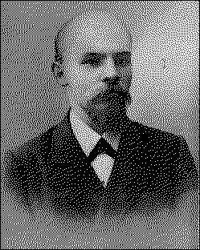

V. I. LENINWHAT IS |  |
PUBLISHER'S NOTE
C O N T E N T S
[Chapters 1-3 -- DJR]
|
PREFACE |
2 | |
|
I. DOGMATISM AND "FREEDOM OF CRITICISM" |
6 | |
|
A. |
What Is "Freedom of Criticism"? |
6 |
|
II. THE SPONTANEITY OF THE MASSES AND THE |
| |
|
A. |
The Beginning of the Spontaneous Upsurge |
35 |
|
III. TRADE-UNIONIST POLITICS AND SOCIAL-DEMOCRATIC |
| |
|
A. |
Political Agitation and Its Restriction by the |
|
|
[Chapters 4 and 5, Appendix, etc. -- DJR] | ||
|
IV. THE AMATEURISHNESS OF THE ECONOMISTS AND AN |
| |
|
What Is Amateurishness? |
123 | |
|
V. THE "PLAN" FOR AN ALL-RUSSIAN POLITICAL NEWSPAPER |
189 | |
|
Who Was Offended by the Article "Where To Begin?" |
190 | |
|
221 | ||
|
THE ATTEMPT TO UNITE THE "ISKRA " WITH THE |
| |
|
CORRECTION TO "WHAT IS TO BE DONE?" |
235 | |
|
NOTES
[Chapters 4 and 5] |
237 | |
(continued)
page 122
THE AMATEURISHNESS OF THE ECONOMISTS
The Rabocheye Dyelo's assertions -- which we have analyzed above -- that the economic struggle is the most widely applicable means of political agitation and that our task now is to lend the economic struggle itself a political character, etc., express a narrow view not only of our political, but also of our organi~ational tasks. The "economic struggle against the employers and the government" does not in the least re quire -- and therefore such a struggle can never give rise to -- an all-Russian centralized organization that will combine, in one general onslaught, all and every manifestation of political opposition, protest and indignation, an organization that will consist of professional revolutionaries and be led by the real political leaders of the whole people. This is but natural. The character of any organization is naturally and inevitably determined by the content of its activity. Consequently, the Rabocheye Dyelo, by the assertions analyzed above, sanctifies and legitimatizes not only the narrowness of political activity, but also the narrowness of organization al work. In this case too, as always, it is an organ whose consciousness yields to spontaneity. And yet the worship of spontaneously developing forms of organization, failure to realize how narrow and primitive is our organizational work, what amateurs we still are in this most important sphere, failure to realize this, I say, is a veritable disorder from which our movement suffers. It is not a disorder that comes with decline, it is, of course, a disorder that comes with growth. But it is precisely at the present time, when the wave of spontaneous indignation, as it were, sweeps over us, leaders and organizers of the movement, that a most ir reconcilable struggle must be waged against all defence of backwardness, against any legitimization of narrowness in this matter, and it is particularly necessary to rouse in all who take part in practical work, in all who are preparing to take up their work, discontent with the amateurishness that prevails among us and an unshakable determination to get rid of it.
We shall try to answer this question by giving a brief description of the activity of a typical Social-Democratic circle of the period of 1894-1901. We have already noted that the entire student youth of the period was absorbed in Marxism. Of course, these students were not only, or even not so much, absorbed in Marxism as a theory, but as an answer to the question: "What is to be done?"; as a call to take the field against the enemy. And these new warriors marched to battle
page 124
with astonishingly primitive equipment and training. In a vast number of cases, they had almost no equipment and absolutely no training. They marched to war like peasants from the plough, armed only with clubs. A students' circle, having no contacts whatever with the old members of the movement, no contacts with circles in other districts, or even in other parts of the same city (or with other universities), without the various sections of the revolutionary work being in any way organized, having no systematic plan of activity covering any length of time, establishes contacts with the workers and sets to work. The circle gradually expansds its propaganda and agitation; by its activities it wins the sympathies of rather large sections of workers and of a certain section of the educated classes, which provide it with money and from among whom the "committee" recruits new groups of young people. There is a growing fascination about the committee (or League of Struggle), its sphere of activity becomes wider and its activities expand quite spontaneously: the very people who a year or a few months previously had spoken at the gatherings of the students' circle and discussed the question, "Whither?", who established and maintained contacts with the workers, wrote and published leaflets, now establish contacts with other groups of revolutionaries, procure literature, set to work to publish a local newspaper, begin to talk about organizing a demonstration, and finally, commence open hostilities (these open hostilities may, according to circumstances, take the form of the publication of the very first agitational leaflet, or the first issue of a newspaper, or of the organization of the first demonstration). And usually the very first of these actions ends in immediate and wholesale arrests. Immediate and wholesale, precisely because these
page 125
open hostilities were not the result of a systematic and carefully thought-out and gradually prepared plan for a prolonged and stubborn struggle, but simply the result of the spontaneous growth of traditional circle work; because, naturally, the police, in almost every case, knew the principal leaders of the local movement, for they had already "won a reputation" for themselves in their school days, and the police waited only for a convenient moment to make their raid, deliberately allowing the circle sufficient time to develop its work so that they might obtain a palpable corpus delicti, and always permitted several of the persons known to them to remain at liberty in order to act as "breeders" (which, I believe, is the technical term used both by our people and by the gendarmes). One cannot help comparing this kind of warfare with that conducted by a mob of peasants, armed with clubs, against modern troops. And one can only wonder at the virility of the movement which expanded, grew and scored victories in spite of the total lack of training among the fighters. It is true that from the historical point of view, the primitiveness of equipment was not only inevitable at first, but even legitimate as one of the conditions for the wide recruiting of fighters, but as soon as serious war operations commenced (and they commenced in fact with the strikes in the summer of 1896), the defects in our fighting organizations made themselves felt to an ever-increasing degree. Thrown into confusion at first and committing a number of mistakes (for example, its appeal to the public describing the misdeeds of the Socialists, or the deportation of workers from the capital to provincial industrial centres), the government very soon adapted itself to the new conditions of the struggle and managed to deploy its perfectly equipped detachments of
page 126
agents provocateurs, spies and gendarmes. Raids became so frequent, affected such a vast number of people and cleared out the local circles so thoroughly that the masses of the workers literally lost all their leaders, the movement assumed an incredibly sporadic character, and it became utterly impossible to establish continuity and coherence in the work. The terrible dispersion of the local leaders, the accidental character of the circle memberships, the lack of training in and the narrow outlook on theoretical, political, and organizational questions were all the inevitable result of the conditions described above. Things reached such a pass that in several places the workers, because of our lack of stamina and ability to maintain secrecy, began to lose faith in the intelligentsia and to avoid them; the intellectuals, they said, are much too careless and lay themselves open to police raids!
Anyone who has the slightest knowledge of the movement is aware that all thinking Social-Democrats have at last begun to regard these primitive methods as a disease. And in order that the reader who is not acquainted with the movement may have no grounds for thinking that we are "inventing" a special stage or special disease of the movement, we shall refer once again to the witness we have already quoted. We hope we shall be forgiven for the length of the quotation:
"While the gradual transition to more extensive practical activity," writes B-v in the Rabocheye Dyelo, No. 6, "a transition which is directly dependent on the general transitional period through which the Russian working-class movement is now passing, is a characteristic feature . . . there is, however, another and not less interesting feature in the general mechanism of the Russian workers' revolution. We refer to the general lack of revolutionary forces fit for action* which is felt not only in St. Petersburg, but throughout the whole of Russia. With the
page 127
general revival of the working-class movement, the general development of the working masses, growing frequency of strikes, and with the mass struggle of the workers becoming more and more open, which intensifies government persecution, arrests, deportation and exile, this lack of highly skilled revolutionary forces is becoming increasingly marked and, without a doubt, cannot but affect the depth and the general character of the movement. Many strikes take place without the revolutionary organizations exercising any strong and direct influence upon them. . . . A shortage of agitational leaflets and illegal literature is felt. . . . The workers' circles are left without agitators. . . . In addition, there is a constant shortage of funds. In a word, the growth of the working-class movement is outstripping the growth and development of the revolutionary organizations. The numerical strength of the active revolutionaries is too small for them to concentrate in their own hands the influence exercised upon the whole mass of discontented workers, or to give this discontent even a shadow of coherence and organization. . . . The separate circles and individual revolutionaries are not brought together and united, and do not represent a single, strong and disciplined organization with the planned development of its parts. . . ." And admitting that the immediate organization of fresh circles to replace those that have been broken up "merely proves the virility of the movement . . . but does not prove the existence of an adequate number of sufficiently fit revolutionary workers," the author concludes: "The lack of practical training among the St. Petersburg revolutionaries is seen in the results of their work. The recent trials, especially that of the Self-Emancipation group and the Labour versus Capital group,[80] clearly showed that the young agitator, lacking a detailed knowledge of the conditions of labour and, consequently, of the conditions under which agitation can be carried on in a given factory, ignorant of the principles of secrecy, and understanding only the general principles of Social-Democracy" (but does he understand?) "is able to carry on his work for perhaps four, five or six months. Then come arrests, which frequently lead to the breakup of the whole organization, or at all events, part of it. The question arises, therefore, can the group conduct successful and fruitful activity if its existence is measured by months? . . . Obviously, the defects of the existing organizations cannot be wholly ascribed to the transitional period. . . . Obviously, the numerical and above all the qualitative make-up of the functioning organizations is no small factor, and the first task our Social-Democrats must undertake . . . is effectively to combine the organizations and make a strict selection of their membership."
page 128
We must now deal with a question that has undoubtedly arisen in the mind of every reader. Can a connection be established between amateurishness, this disorder of growth affecting the whole of the movement, and Economism, which is one of the trends in Russian Social-Democracy? We think that it can. Lack of practical training, lack of ability to carry on organizational work is certainly common to us all, including those who have from the very outset unswervingly stood for revolutionary Marxism. And, of course, were it only lack of practical training, no one could blame the practical workers. But the term "amateurishness" embraces something else: it denotes a narrow scope of revolutionary work generally, failure to understand that a good organization of revolutionaries cannot be built up on the basis of such narrow activity, and lastly -- and most important -- it denotes attempts to justify this narrowness and to elevate it to a special "theory," i.e., bowing in worship to spontaneity on this question too. Once such attempts were observed, it became certain that amateurishness is connected with Economism and that we shall never eliminate this narrowness of our organizational activity until we eliminate Economism generally (i.e., the narrow conception of Marxist theory, of the role of Social-Democracy and of its political tasks). And these attempts were revealed in a twofold direction. Some began to say: the mass of workers themselves have not yet advanced the broad and militant political tasks that the revolutionaries are attempting to "impose" upon them; they must continue, for the time being, to fight for immediate political demands, to conduct "the economic struggle against the employers
page 129
and the government"[*] (and, naturally, corresponding to this struggle which is "easily understood" by the mass movement must be an organization that will be "easily understood" by the most untrained youth). Others, far removed from any kind of "gradualness," began to say: it is possible and necessary to "bring about a political revolution," but that does not require building a strong organization of revolutionaries to train the proletariat in the steadfast and stubborn struggle. All we need do is to snatch up our old friend, the "handy" wooden club. Speaking without metaphor it means -- we must organize a general strike,[**] or we must stimulate the "spiritless" progress of the working-class movement by means of "excitative terror."*** Both these trends, the opportunists and the "revolutionists," bow to the prevailing amateurishness; neither believes that it can be eliminated, neither understands our primary and most imperative practical task, namely, to establish an organization of revolutionaries capable of maintaining the energy, stability and continuity of the political struggle.
We have just quoted the words of B-v: "The growth of the working-class movement is outstripping the growth and development of the revolutionary organizations." This "valuable remark of a close observer" (the Rabocheye Dyelo's comment on B-v's article) has a twofold value for us. It shows that we were right in our opinion that the principal cause of the present crisis in Russian Social-Democracy is
page 130
that the leaders ("ideologists," revolutionaries, Social-Democrats) lag behind the spontaneous upsurge of the masses. It shows that all the arguments advanced by the authors of the Economic letter (in the Iskra, No. 12), by B. Krichevsky and by Martynov, about the danger of belittling the significance of the spontaneous element, about the drab everyday struggle, about tactics-as-a-process, etc., are nothing more than a glorification and defence of amateurishness. These people who cannot pronounce the word "theoretician" without a contemptuous grimace, who describe their genuflections to common lack of training and backwardness as a "sense for the realities of life," reveal in practice a failure to understand our most imperative practical tasks. To laggards they shout: Keep in step! Don't run ahead! To people suffering from a lack of energy and initiative in organizational work, from lack of "plans" for wide and bold activity, they shout about "tactics-as-a-process"! The principal sin we commit is that we degrade our political and organizational tasks to the level of the immediate, "palpable," "concrete" interests of the everyday economic struggle; and yet they keep singing to us the old song: lend the economic struggle itself a political character. We say again: this kind of thing displays as much "sense for the realities of life" as was displayed by the hero in the popular fable who shouted to a passing funeral procession: many happy returns of the day!
Recall the matchless, truly "Narcissus"[81]-like superciliousness with which these wiseacres lectured Plekhanov about the "workers' circles generally" (sic !) being "unable to cope with political tasks in the real and practical sense of the word, i.e., in the sense of the expedient and successful practical struggle for political demands." (The Rabocheye Dyelo's Reply, p. 24.)
page 131
There are circles and circles, gentlemen! Circles of "amateurs" are, of course, not capable of coping with political tasks so long as they have not become aware of their amateurishness and do not abandon it. If, besides this, these amateurs are enamoured of their primitive methods, and insist on writing the word "practical" in italics, and imagine that being practical demands that one's tasks be reduced to the level of understanding of the most backward strata of the masses then they are hopeless, of course, and certainly cannot cope with any political tasks in general. But a circle of heroes like Alexeyev and Myshkin, Khalturin and Zhelyabov is capable of coping with political tasks in the genuine and most practical sense of the term, and it is capable of coping with them precisely because and to the extent that their passionate preaching meets with response among the spontaneously awakening masses, and their seething energy is answered and supported by the energy of the revolutionary class. Plekhanov was a thousand times right when he not only pointed to this revolutionary class, not only proved that its spontaneous awakening was inevitable, and unavoidable, but also when he set even "workers' circles" a great and lofty political task. But you refer to the mass movement that has sprung up since that time in order to degrade this task, in order to narrow down the energy and scope of activity of the "workers' circles." If you are not amateurs enamoured of your primitive methods, what are you then? You boast that you are practical, but you fail to see what every Russian practical worker knows, namely, the miracles that the energy, not only of circles, but even of individual persons is able to perform in the revolutionary cause. Or do you think that our movement cannot produce heroes like those of the 'seven-
page 132
ties? But why? Because we lack training? But we are training ourselves, will go on training and acquire the training! Unfortunately it is true that mould has formed on the surface of the stagnant waters of the "economic struggle against the employers and the government"; people have appeared among us who kneel in prayer to spontaneity, gazing with awe (as Plekhanov expresses it) upon the "posteriors" of the Russian proletariat. But we will get rid of this mould. The time has come when Russian revolutionaries, guided by a genuinely revolutionary theory, relying upon the genuinely revolutionary and spontaneously awakening class, can at last -- at last! -- rise to full stature in all their giant strength. All that is required is that the masses of our practical workers, and the still larger masses of those who long for practical work even while still at school, shall meet with scorn and ridicule any suggestion that may be made to degrade our political tasks and to restrict the scope of our organizational work. And we shall achieve that, rest assured, gentlemen!
In the article "Where To Begin?" I wrote in opposition to the Rabocheye Dyelo: "The tactics of agitation in relation to some special question, or the tactics with regard to some detail of party organization may be changed in twenty-four hours; but only people devoid of all principles are capable of changing in twenty-four hours, or twenty-four months for that matter, their views as to whether it is in general, always and absolutely, necessary to have a militant organization, and to conduct political agitation among the masses."[82] To this the Rabocheye Dyelo replied: "This, the only one of the Iskra's charges that claims to be based on facts, is totally without foundation. Readers of the Rabocheye Dyelo know very well that right from the outset we not only called for political agita-
page 133
tion, without waiting for the appearance of the Iskra . . . " (and saying at the same time that not only the workers' circles, "but also the mass working-class movement could not regard as its primary political task the overthrow of absolutism," but only the struggle for immediate political demands, and that "the masses begin to understand immediate political demands after one, or at all events, after several strikes") . . . "but the publications that we procured from abroad for the comrades working in Russia, provided the only Social-Democratic political and agitational material . . . " (and in this only material, you not only based the widest political agitation exclusively on the economic struggle, but you even went to the extent of claiming that this narrowed-down agitation was the "most widely applicable." And do you not observe, gentlemen, that your own arguments prove the necessity -- that kind of material being the only material provided -- for the Iskra's appearance, and its fight against the Rabocheye Dyelo ?). . . ."On the other hand, our publishing activity actually prepared the ground for the tactical unity of the party" . . . (unity in the belief that tactics are a process of growth of Party tasks, which grow together with the Party? A precious unity indeed!) . . . "and by that rendered possible the creation of a 'militant organization' for which the Union did all that an organization abroad could do." (Rabocheye Dyelo, No. 10, p. 15.) A vain attempt at evasion! I would never dream of denying that you did all you possibly could. I have asserted and assert now, that the limits of what is "possible" for you to do are restricted by the narrowness of your outlook. It is ridiculous even to talk about a "militant organization" to fight for "immediate political demands," or conduct "the economic struggle against the employers and the government."
page 134
But if the reader wishes to see the pearls of "Economist" passion for amateurishness, he must, of course, turn from the eclectic and vacillating Rabocheye Dyelo to the consistent and determined Rabochaya Mysl. In its Special Supplement, p. 13, R. M. wrote: "Now two words about the so-called revolutionary intelligentsia proper. It is true that on more than one occasion it has proved that it was quite prepared to 'enter into determined battle with tsarism'! The unfortunate thing, however, is that, ruthlessly persecuted by the political police, our revolutionary intelligentsia imagined that the struggle against this political police was the political struggle against the autocracy. That is why, to this day, it cannot understand 'where the forces for the fight against the autocracy are to be obtained.' "
What matchless and magnificent contempt for the hght against the police is displayed by this worshipper (in the worst sense of the word) of the spontaneous movement! Our inability to organize secretly he is prepared to justify by the argument that with the spontaneous growth of the mass movement, it is not at all important for us to hght against the political police!! Very few indeed would subscribe to this monstrous conclusion; our defects in revolutionary organization have become too urgent a matter to permit them to do that. But if Martynov, for example, refuses to subscribe to it, it will only be because he is unable, or lacks the courage, to think out his ideas to their logical conclusion. Indeed, does the "task" of prompting the masses to put forward concrete demands that promise palpable results call for special efforts to create a stable, centralized, militant organization of revolutionaries? Cannot such a "task" be carried out even by masses that do not "fight against the political police" at
page 135
all? More: could this task be fulhlled unless, in addition to the few leaders, it was undertaken by such workers (the overwhelming majority), who are quite incapable of "fighting against the political police"? Such workers, average people of the masses, are capable of displaying enormous energy and self-sacrifice in strikes and in street battles with the police and troops, and are capable (in fact, are alone capable) of determining the outcome of our entire movement -- but the struggle against the political police requires special qualities; it requires professional revolutionaries. And we must not only see to it that the masses "advance" concrete demands, but also that the masses of the workers "advance" an increasing number of such professional revolutionaries. Thus we have reached the question of the relation between an organization of professional revolutionaries and the pure and simple working-class movement. Although this question has found little reflection in literature, it has greatly engaged us "politicians" in conversations and controversies with those comrades who gravitate more or less towards Economism. It is a question that deserves special treatment. But before taking it up let us cite one more quotation by way of illustrating our thesis concerning the connection between amateurishness and Economism.
In his Reply, Mr. N. N.[83] wrote: "The Emancipation of Labour group demands direct struggle against the government without hrst considering where the material forces for this struggle are to be obtained, and without indicating the path of the struggle." Emphasizing the last words, the author adds the following footnote to the word "path": "This can not be explained by purposes of secrecy, because the program does not refer to a plot but to a mass movement. And the
page 136
masses cannot proceed by secret paths. Can we conceive of a secret strike? Can we conceive of secret demonstrations and petitions?" (Vademecum, p. 59.) Thus, the author approaches quite closely to the question of the "material forces" (organizers of strikes and demonstrations) and to the "paths" of the struggle, but, nevertheless, is still in a state of consternation, because he "worships" the mass movement, i.e., he regards it as something that relieves us of the necessity of conducting revolutionary activity and not as something that should encourage us and stimulate our revolutionary activity. A secret strike is impossible -- for those who take part in it and for those immediately associated with it, but a strike may remain (and in the majority of cases does remain) a "secret" to the masses of the Russian workers, because the government takes care to cut all communication between strikers, takes care to prevent all news of strikes from spreading. Here indeed is where a special "fight against the political police" is required, a fight that can never be conducted by such large masses as take part in strikes. This struggle must be organized, according to "all the rules of the art," by people who are professionally engaged in revolutionary activity. The fact that the masses are spontaneously being drawn into the movement does not make the organization of this struggle less necessary. On the contrary, it makes it more necessary; for we Socialists would be failing in our direct duty to the masses if we did not prevent the police from making a secret of (and if we did not ourselves sometimes secretly prepare) every strike and every demonstration. And we shall succeed in doing this, precisely because the spontaneously awakening masses will advance also from their own ranks increasing numbers of "professional revolution
page 137
aries" (that is, if we do not take it into our heads to advise the workers to keep on marking time).
It is only natural to expect that a Social-Democrat, who conceives the political struggle as being identical with the "economic struggle against the employers and the government," should conceive of an "organization of revolutionaries" as being more or less identical with an "organization of workers." And this, in fact, is what actually happens; so that when we talk about organization, we literally talk in different tongues. I vividly recall, for example, a conversation I once had with a fairly consistent Economist, with whom I had not been previously acquainted. We were discussing the pamphlet Who Will Bring About the Political Revolution? and we were very soon agreed that its principal defect was that it ignored the question of organization. We were beginning to think that we were in complete agreement with each other -- but . . . as the conversation proceeded, it became clear that we were talking of different things. My interlocutor accused the author of ignoring strike funds, mutual aid societies, etc., whereas I had in mind an organization of revolutionaries as an essential factor in "bringing about" the political revolution. As soon as that disagreement became clear, I hardly remember a single question of principle upon which I was in agreement with that Economist! What was the source of our disagreement? It was the fact that on questions of both organization and politics the
page 138
Economists are forever lapsing from Social-Democracy into trade unionism. The political struggle of Social-Democracy is far more extensive and complex than the economic struggle of the workers against the employers and the government. Similarly (and indeed for that reason), the organization of a revolutionary Social-Democratic party must inevitably be of a different kind than the organizations of the workers designed for this struggle. A workers' organization must in the first place be a trade organization; secondly, it must be as broad as possible; and thirdly, it must be as little clandestine as possible (here, and further on, of course, I have only autocratic Russia in mind). On the other hand, the organizations of revolutionaries must consist first, foremost and mainly of people who make revolutionary activity their profession (that is why I speak of organizations of revolutionaries, meaning revolutionary Social-Democrats). In view of this common feature of the members of such an organization, all distinctions as between workers and intellectuals, and certainly distinctions of trade and profession, must be utterly obliterated. Such an organization must of necessity be not too extensive and as secret as possible. Let us examine this threefold distinction.
In countries where political liberty exists the distinction between a trade union and a political organization is clear enough, as is the distinction between trade unions and Social-Democracy. The relation of the latter to the former will naturally vary in each country according to historical, legal and other conditions -- it may be more or less close, complex, etc. (in our opinion it should be as close and simple as possible); but there can be no question of trade union organizations being identical with the Social-Democratic party
page 139
organizations in free countries. In Russia, however, the yoke of the autocracy appears at first glance to obliterate all distinctions between a Social-Democratic organization and trade unions, because all workers' associations and all circles are prohibited, and because the principal manifestation and weapon of the workers' economic struggle -- the strike -- is regarded as a criminal (and sometimes even as a political!) offence. Conditions in our country, therefore, on the one hand, strongly "impel" the workers engaged in economic struggle to concern themselves with political questions, and, on the other, they "impel" Social-Democrats to confuse trade unionism with Social-Democracy (and our Krichevskys, Martynovs and their like, while diligently discussing the first kind of "impelling," fail to notice the second kind). Indeed, picture to yourselves people who are immersed ninety-nine per cent in "the economic struggle against the employers and the government." Some of them will never, during the whole course of their activity (four to six months) be impelled to think of the need for a more complex organization of revolutionaries; others, perhaps, will come across the fairly widely distributed Bernsteinian literature, from which they will become convinced of the profound importance of the forward march of "the drab everyday struggle." Still others will be carried away, perhaps, by the seductive idea of showing the world a new example of "close and organic contact with the proletarian struggle" -- contact between the trade union and Social-Democratic movements. Such people may argue that the later a country enters into the arena of capitalism and, consequently, of the working-class movement, the more the Socialists in that country may take part in, and support, the trade union movement, and the less reason can
page 140
and should there be for non-Social-Democratic trade unions. Up to this point the argument is quite correct; unfortunately, however, some go beyond that and envisage the complete fusion of Social-Democracy with trade unionism. We shall soon see, from the example of the Rules of the St. Petersburg League of Struggle, what a harmful effect these dreams have upon our plans of organization.
The workers' organizations for the economic struggle should be trade union organizations. Every Social-Democratic worker should as far as possible assist and actively work in these organizations. That is true. But it is not at all to our interest to demand that only Social-Democrats should be eligible for membership in the "trade" unions: that would only narrow down our influence over the masses. Let every worker who understands the need to unite for the struggle against the employers and the government join the trade unions. The very aim of the trade unions would be unattainable if they failed to unite all who have attained at least this elementary degree of understanding, and if they were not very wide organizations. And the wider these organizations are, the wider our influence over them will be -- an influence due not only to the "spontaneous" development of the economic struggle but also to the direct and conscious effort of the socialist trade union members to influence their comrades. But a broad organization cannot apply the methods of strict secrecy (since the latter demands far greater training than is required for the economic struggle). How is the contradiction between the need for a large membership and the need for strictly secret methods to be reconciled? How are we to make the trade unions as little clandestine as possible? Generally speaking, there can be only two ways to this end:
page 141
either the trade unions become legalized (and in some countries this preceded the legalization of the Socialist and political unions), or the organization is kept a secret one, but so "free" and amorphous, lose[84] as the Germans say, that the need for secret methods becomes almost negligible as far as the bulk of the members is concerned.
The legalization of the non-socialist and non-political labour unions in Russia has already begun, and there is no doubt that every advance made by our rapidly growing Social-Democratic working-class movement will multiply and encourage attempts at legalization -- attempts proceeding for the most part from supporters of the existing order, but partly also from the workers themselves and from liberal intellectuals. The banner of legality has already been hoisted by the Vasilyevs and the Zubatovs. Support has been promised by Messrs. the Ozerovs and the Wormses, and followers of the new tendency are already to be found among the workers. Henceforth, we cannot but reckon with this tendency. As to how we are to reckon with it, there can be no two opinions among Social-Democrats. We must steadfastly expose any part played in this movement by the Zubatovs and the Vasilyevs, the gendarmes and the priests, and explain to the workers what their real intentions are. We must also expose all the conciliatory, "harmonious" notes that will be heard in the speeches of liberal politicians at the legal meetings of the workers, irrespective of whether these speeches are motivated by an earnest conviction of the desirability of peaceful class collaboration, by a desire to curry favour with the powers that be, or are simply the result of clumsiness. Lastly, we must warn the workers against the traps often set by the police, who at such open meetings and permitted societies spy
page 142
out the "hotheads" and try to make use of legal organizations to plant their agents provocateurs in the illegal organizations.
But while doing all this, we must not forget that in the long run the legalization of the working-class movement will be to our advantage, and not to that of the Zubatovs. On the contrary, it is precisely our campaign of exposure that will help us to separate the tares from the wheat. What the tares are, we have already indicated. By the wheat, we mean that the attention of still larger and more backward sections of the workers is attracted to social and political questions; we mean relieving us, revolutionaries, of functions which are essentially legal (the distribution of legal books, mutual aid, etc.), and the development of which will inevitably provide us with an increasing quantity of material for agitation. In this sense, we may, and should say, to the Zubatovs and the Ozerovs: keep at it, gentlemen, do your best! Whenever you place a trap in the path of the workers (either by way of direct provocation, or by the "honest" corruption of the workers with the aid of "Struve-ism"), we shall see to it that you are exposed. But whenever you take a real step forward, even if it is the most "timid zigzag," we shall say: please continue! And the only step that can be a real step forward is a real, if small, extension of the workers' field of action. And every such extension will be to our advantage and will help to hasten the advent of legal societies of the kind where not agents provocateurs will detect Socialists, but where Socialists will find adherents. In a word, our task is to fight down the tares. It is not our business to grow wheat in flower pots. By pulling up the tares, we clear the soil for the wheat. And while the Afanasi Ivanoviches and Pulkheria Ivanovnas[85] are tending their flower-pot crops, we must prepare the reapers, not only
page 143
to cut down the tares of today, but also to reap the wheat of tomorrow.[*]
Thus, we cannot by means of legalization solve the problem of creating a trade union organization that will be as little secret and as extensive as possible (but we would be extremely glad if the Zubatovs and the Ozerovs provided us with even a partial opportunity for such a solution -- to which end we must fight them as strenuously as possible!). There remains the path of secret trade union organization; and we must give all possible assistance to the workers, who (as we definitely know) are already adopting this path. Trade union organizations can be not only of tremendous value in developing and consolidating the economic struggle, but can also become a very important auxiliary to political agitation and revolutionary organization. In order to achieve this, and in order to guide the nascent trade union movement in the channels the Social-Democrats desire, we must first of all clearly realize how absurd is the plan of organization with which the St. Petersburg Economists have been occupying themselves for nearly five years. That plan is set forth in the "Rules for a Workers' Benefit Fund" of July 1897 (Listok Rabotnika, No. 9-10, p. 46; taken from the Rabochaya Mysl, No. 1), and also
page 144
in the "Rules for a Trade Union Workers' Organization," of October 1900 (special leaflet printed in St. Petersburg and quoted in the Iskra, No. 1). The fundamental defect of both these sets of rules is that they give a detailed formulation of a broad workers' organization and confuse it with an organization of revolutionaries. Let us take the last-mentioned set of rules, since it is drawn up in greater detail. The body of it consists of fifty-two paragraphs. Twenty-three paragraphs deal with structure, the method of conducting business and the jurisdiction of the "workers' circles," which are to be organized in every factory ("not more than ten persons") and which elect "central (factory) groups." "The central group," says paragraph 2, "observes all that goes on in its factory or workshop and keeps a record of events." "The central group presents to subscribers a monthly financial account" (par. 17), etc. Ten paragraphs are devoted to the "district organization," and nineteen to the highly complex interconnection between the "Committee of the Workers' Organization" and the "Committee of the St. Petersburg League of Struggle" (delegates from each district and from the "executive groups" -- "groups of propagandists, groups for maintaining contact with the provinces and with the organization abroad, groups for managing stores, publications and funds").
Social-Democracy= "executive groups" in relation to the economic struggle of the workers! It would be difficult to find a more striking illustration of how the Economists' ideas deviate from Social-Democracy to trade unionism, and how alien to them is any idea that a Social-Democrat must concern himself first and foremost with an organization of revolutionaries who are capable of guiding the whole proletarian struggle for emancipation. To talk of "the political emancipation of the working class" and of the struggle against "tsarist
page 145
despotism," and yet to draft rules like this, indicates a complete failure to understand what the real political tasks of Social-Democracy are. Not one of the fifty or so paragraphs reveals the slightest glimmer of understanding that it is necessary to conduct the widest possible political agitation among the masses, an agitation that deals with every aspect of Russian absolutism and with all the features of the various social classes in Russia. Rules like these are of no use even for the achievement of trade union aims, let alone political aims, for that requires organization according to trades, of which no mention is made in the Rules.
But most characteristic of all, perhaps, is the amazing top-heaviness of the whole "system," which attempts to bind each single factory with the "committee" by a permanent string of uniform and ludicrously petty rules and a three-stage system of election. Hemmed in by the narrow outlook of Economism, the mind is lost in details which positively reek of red tape and bureaucracy. In practice, of course, three-fourths of the clauses are never applied; on the other hand, however, a "conspiratorial" organization of this kind, with its central group in each factory, makes it very easy for the gendarmes to carry out raids on a vast scale. The Polish comrades have already passed through a similar phase in their movement, when everybody was enthusiastic about the extensive organization of workers' benefit funds; but they very quickly abandoned this idea when they saw that such organizations only provided rich harvests for the gendarmes. If we are out for wide workers' organizations, and not for widespread arrests, if we do not want to provide satisfaction to the gendarmes, we must aim to have these organizations remain entirely informal. But will they be able to function in that case? Well, let us see what the functions are: ". . . to observe all that goes on in the
page 146
factory and keep a record of events." (Par. 2 of the Rules.) Do we really require a formal group for this? Could not the purpose be better served by correspondence to the illegal papers and without setting up special groups? ". . . To lead the struggles of the workers for the improvement of their workshop conditions." (Par. 3 of the Rules.) This, too, requires no formal group. Any sensible agitator can establish just what demands the workers want to advance in the course of ordinary conversation and transmit them to a narrow -- not a wide -- organization of revolutionaries to be embodied in a leaflet. ". . . To organize a fund . . . to which subscriptions of two kopeks per ruble should be made" (par. 9) . . . to present to subscribers a monthly financial account (par. 17) . . . to expel members who fail to pay dues (par. 10), and so forth. Why, this is a very paradise for the police; for nothing would be easier than for them to penetrate into the ponderous secrecy of a "central factory fund," confiscate the money and arrest all the best people. Would it not be simpler to issue one-kopek or two-kopek coupons bearing the official stamp of a well-known (very exclusive and very secret) organization, or to make collections without coupons of any kind and to print reports in a certain agreed code in an illegal paper? The object would thereby be attained, but it would be a hundred times more difficult for the gendarmes to pick up clues.
I could go on analyzing the Rules, but I think that what has been said will suffice. A small, compact core of the most reliable, experienced and hardened workers, with responsible representatives in the principal districts and connected by all the rules of strict secrecy with the organization of revolutionaries, can, with the widest support of the masses and without any formal organization, perform all the functions of
page 147
a trade union organization, and perform them, moreover, in a manner desirable to Social-Democracy. Only in this way can we secure the consolidation and development of a Social-Democratic trade union movement, in spite of all the gendarmes.
It may be objected that an organization which is so loose that it is not even definitely formed, and which even has no enrolled and registered membership, cannot be called an organization at all. That may very well be. I am not out for names. But this "organization without members" will do everything that is required, and from the very outset guarantee the closest contact between our future trade unions and Socialism. Only an incorrigible utopian would want a broad organization of workers, with elections, reports, universal suffrage, etc., under the autocracy.
The moral to be drawn from this is a simple one: if we begin with the solid foundation of a strong organization of revolutionaries, we can guarantee the stability of the movement as a whole and carry out the aims of both Social-Democracy and of trade unions proper. If, however, we begin with a broad workers' organization, supposed to be most "accessible" to the masses (but as a matter of fact most accessible to the gendarmes and making the revolutionaries most accessible to the police), we shall achieve neither one nor the other of these aims; we shall not eliminate our amateurishness, and because we remain scattered and our forces are constantly broken up by the police, we shall only make the trade unions of the Zubatov and Ozerov type most accessible to the masses.
What, properly speaking, should be the functions of an organization of revolutionaries? We shall deal with this in detail. But first let us examine a very typical argument advanced by our terrorist, who (sad fate!) in this matter also is a next-
page 148
door neighbour to the Economist. The Svoboda (No. 1), a journal published for workers, contains an article entitled "Organization," the author of which tries to defend his friends, the Economist workers of Ivanovo-Voznesensk. He writes:
"It is a bad thing when the crowd is mute and unenlightened, and when the movement does not proceed from the rank and file. For instance, the students of a university town leave for their homes during the summer and other vacations and immediately the workers' movement comes to a standstill. Can a workers' movement which has to be pushed on from outside be a real force? Of course not! . . . It has not yet learned to walk, it is still in leading strings. So it is in everything. The students go off, and everything comes to a standstill. The most capable among the cream are arrested -- the milk turns sour. If the 'committee' is arrested, everything comes to a standstill until a new one can be formed. And one never knows what sort of committee will be set up next -- it may be nothing like the former one. The first preached one thing, the second may preach the very opposite. Continuity between yesterday and tomorrow is broken, the experience of the past does not serve as a guide for the future. And all this is because no deep roots have been struck in the crowd; the work is carried on not by a hundred fools, but by a dozen wise men. A dozen wise men can be wiped out at a snap, but when the organization embraces the crowd everything proceeds from the crowd, and nobody, however he tries, can stop the cause." (P. 63.)
The facts are described correctly. They provide a fairly good picture of our amateurishness. But the conclusions are worthy of the Rabochaya Mysl both for their stupidity and their lack of political tact. They represent the height of stupidity, because the author confuses the philosophical and social-historical question of the "depth" of the "roots" of the movement with the technical and organizational question of the best method of fighting the gendarmes. They represent the height of political tactlessness, because the author, instead of appealing from bad leaders to good leaders, appeals from
page 149
the leaders in general to the "crowd." This is as much an attempt to drag us back organizationally as the idea of substituting excitative terrorism for political agitation drags us back politically. Indeed, I am experiencing a veritable embarras de richesses,[86] and hardly know where to begin to disentangle the confusion created by the Svoboda. For the sake of clarity, I shall try to begin by citing an example. Take the Germans. It will not be denied, I hope, that their organization embraces the crowd, that in Germany everything proceeds from the crowd, that the working-class movement there has learned to walk. Yet observe how this vast crowd of millions values its "dozen" tried political leaders, how firmly it clings to them! Members of the hostile parties in parliament have often teased the Socialists by exclaiming: "Fine democrats you are indeed! Yours is a working-class movement only in name; in actual fact it is the same clique of leaders that is always in evidence, Bebel and Liebknecht, year in and year out, and that goes on for decades. Your supposedly elected workers' deputies are more permanent than the officials appointed by the Emperor!" But the Germans only smile with contempt at these demagogic attempts to set the "crowd" against the "leaders," to arouse bad and ambitious instincts in the former, and to rob the movement of its solidity and stability by undermining the confidence of the masses in their "dozen wise men." Political thinking is already sufficiently developed among the Germans, and they have accumulated sufficient political experience to understand that without the "dozen" tried and talented leaders (and talented men are not born by the hundred), professionally trained, schooled by long experience and working in perfect harmony, no class in modern society can wage a determined struggle. The Germans too have had demagogues in their ranks who have flattered
page 150
the "hundred fools," exalted them above the "dozen wise men," extolled the "mighty fists" of the masses, and (like Most and Hasselmann) have spurred them on to reckless "revolutionary" action and sown distrust towards the firm and steadfast leaders. It was only by stubbornly and relentlessly combating all demagogic elements within the socialist movement that German Socialism managed to grow and become as strong as it is. Our wiseacres, however, at a time when Russian Social-Democracy is passing through a crisis entirely due to the lack of sufficient numbers of trained, developed and experienced leaders to guide the spontaneously awakening masses, cry out with the profundity of fools: "it is a bad thing when the movement does not proceed from the rank and file."
"A committee of students is no good, it is not stable." Quite true. But the conclusion to be drawn from this is that we must have a committee of professional revolutionaries and it does not matter whether a student or a worker is capable of becoming a professional revolutionary. The conclusion you draw, however, is that the working-class movement must not be pushed on from outside! In your political innocence you fail to notice that you are playing into the hands of our Economists and fostering our amateurishness. In what way, may I ask, did our students "push on" our workers? Solely by the student bringing to the worker the scraps of political knowledge he himself possessed, the crumbs of socialist ideas he had managed to acquire (for the principal intellectual diet of the present-day student, "legal Marxism," could furnish only the rudiments, only crumbs of knowledge). There has never been too much of such "pushing on from outside"; on the contrary, so far there has been too little, all too little of it in our movement, for we have been stewing too assiduously
page 151
in our own juice; we have bowed far too slavishly to the elementary "economic struggle of the workers against the employers and the government." We professional revolutionaries must and will make it our business to engage in this kind of "pushing" a hundred times more forcibly than we have done hitherto. But the very fact that you select so despicable a phrase as "pushing on from outside" -- a phrase which cannot but rouse in the workers (at least in the workers who are as unenlightened as you yourselves) a sense of distrust towards all who bring them political knowledge and revolutionary experience from outside, and rouse in them an instinctive desire to resist all such people -- proves that you are demagogues, and demagogues are the worst enemies of the working class.
Yes, yes! And don't start howling about my "uncomradely methods" of controversy! I have not the least intention of doubting the purity of your intentions. As I have already said, one may become a demagogue out of sheer political innocence. But I have shown that you have descended to demagogy, and I shall never tire of repeating that demagogues are the worst enemies of the working class. The worst enemies because they arouse bad instincts in the crowd, because the unenlightened worker is unable to recognize his enemies in men who represent themselves, and sometimes sincerely so, as his friends. The worst enemies because in the period of disunity and vacillation, when our movement is just beginning to take shape, nothing is easier than to employ demagogic methods to mislead the crowd which can realize its mistake only later by the most bitter experience. That is why the slogan of the day for the Russian Social-Democrat must be: resolute struggle against the Svoboda and the Rabocheye Dyelo, both of
page 152
which have sunk to the level of demagogy. We shall deal with this in greater detail elsewhere.[*]
"A dozen wise men can be more easily wiped out than a hundred fools!" This wonderful truth (for which the hundred fools will always applaud you) appears obvious only because in the very midst of the argument you have skipped from one question to another. You began by talking, and continue to talk of a "committee," an "organization" being wiped out, and now you skip to the question of the "depth" of the movement's "roots." The fact is, of course, that our movement cannot be wiped out precisely because it has hundreds and hundreds of thousands of roots deep down among the masses; but that is not the point we are discussing. As far as "deep roots" are concerned, we cannot be "wiped out" even now, in spite of all our amateurishness, and yet we all complain, and cannot but complain, that "organizations" are wiped out, with the result that it is impossible to maintain continuity in the movement. But since you raise the question of organizations being wiped out and stick to that question, then I assert that it is far more difficult to wipe out a dozen wise men than a hundred fools. And this position I shall defend no matter how much you instigate the crowd against me for my "anti-democratic" views, etc. As I have already said time and again that by "wise men," in connection with organization, I mean professional revolutionaries, irrespective of whether they are trained from among students or workingmen. I assert: 1) that no revolutionary movement can endure without a stable
page 153
organization of leaders that maintains continuity; 2) that the wider the masses spontaneously drawn into the struggle, forming the basis of the movement and participating in it, the more urgent the need of such an organization, and the more solid this organization must be (for it is much easier for demagogues to sidetrack the more backward sections of the masses); 3) that such an organization must consist chiefly of people professionally engaged in revolutionary activity; 4) that in an autocratic state, the more we confine the membership of such an organization to people who are professionally engaged in revolutionary activity and who have been professionally trained in the art of combating the political police, the more difficult will it be to wipe out such an organization, and 5) the greater will be the number of people of the working class and of the other classes of society who will be able to join the movement and perform active work in it.
I invite our Economists, terrorists and "Economists-terrorists"* to confute these propositions. At the moment, I shall deal only with the last two points. The question as to whether it is easier to wipe out "a dozen wise men" or "a hundred fools" reduces itself to the question we have considered above,
page 154
namely, whether it is possible to have a mass organization when the maintenance of strict secrecy is essential. We can never give a mass organization that degree of secrecy without which there can be no question of persistent and continuous struggle against the government. But to concentrate all secret functions in the hands of as small a number of professional revolutionaries as possible does not mean that the latter will "do the thinking for all" and that the crowd will not take an active part in the movement. On the contrary, the crowd will advance from its ranks increasing numbers of professional revolutionaries; for it will know that it is not enough for a few students and for a few workingmen waging the economic struggle, to gather together and form a "committee," but that it takes years to train oneself to be a professional revolutionary; the crowd will "think" not of amateurish methods alone but of such training. The centralization of the secret functions of the organization by no means implies the centralization of all the functions of the movement. The active participation of the widest mass in the illegal press will not diminish because a "dozen" professional revolutionaries centralize the secret functions connected with this work; on the contrary, it will increase tenfold. In this way, and in this way alone, will we ensure that reading of illegal literature, writing for it, and to some extent even distributing it, will almost cease to be secret work, for the police will soon come to realize the folly and futility of setting the whole judicial and administrative machine into motion to intercept every copy of publication that is being broadcast in thousands. This applies not only to the press, but to every function of the movement, even to demonstrations. The active and widespread participation of the masses will not suffer; on the contrary, it will benefit by the fact that a "dozen" experienced
page 155
revolutionaries, trained professionally no less than the police, will centralize all the secret aspects of the work -- drawing up leaflets, working out approximate plans and appointing bodies of leaders for each urban district, for each factory district and for each educational institution, etc. (I know that exception will be taken to my "undemocratic" views, but I shall reply fully to this anything but intelligent objection later on.) The centralization of the most secret functions in an organization of revolutionaries will not diminish, but rather increase the extent and quality of the activity of a large number of other organizations which are intended for a broad public and are therefore as loose and as non-secret as possible, such as workers' trade unions, workers' self-education circles and circles for reading illegal literature, socialist and also democratic circles among all other sections of the population, etc., etc. We must have such circles, trade unions and organizations everywhere in as large a number as possible and with the widest variety of functions; but it would be absurd and dangerous to confuse them with the organization of revolutionaries, to obliterate the border line between them, to dim still more the masses' already incredibly hazy appreciation of the fact that in order to "serve" the mass movement we must have people who will devote themselves exclusively to Social-Democratic activities, and that such people must train themselves patiently and steadfastly to be professional revolutionaries.
Yes, this appreciation has become incredibly dim. Our chief sin with regard to organization is that by our amateurishness we have lowered the prestige of revolutionaries in Russia. A person who is flabby and shaky in questions of theory, who has a narrow outlook, who pleads the spontaneity of the masses as an excuse for his own sluggishness, who resembles
page 156
a trade union secretary more than a people's tribune, who is unable to conceive of a broad and bold plan that would command the respect even of opponents, and who is inexperienced and clumsy in his own professional art -- the art of combating the political police -- why, such a man is not a revolutionary but a wretched amateur!
Let no active worker take offence at these frank remarks, for as far as insufficient training is concerned, I apply them first and foremost to myself. I used to work in a circle[87] that set itself very wide, all-embracing tasks; and all of us, members of that circle, suffered painfully, acutely from the realization that we were proving ourselves to be amateurs at a moment in history when we might have been able to say, paraphrasing a well-known epigram: "Give us an organization of revolutionaries, and we shall overturn Russia!" And the more I recall the burning sense of shame I then experienced, the more bitter are my feelings towards those pseudo Social-Democrats whose teachings "bring disgrace on the calling of a revolutionary," who fail to understand that our task is not to champion the degrading of the revolutionary to the level of an amateur, but to raise the amateurs to the level of revolutionaries.
We have already heard from B-v about "the lack of revolutionary forces fit for action which is felt not only in St. Petersburg, but throughout the whole of Russia." Hardly anyone will dispute this fact. But the question is, how is it to be explained? B-v writes:
page 157
"We shall not go into an explanation of the historical causes of this phenomenon; we shall merely state that a society, demoralized by prolonged political reaction and split by past and present economic changes, advances from its own ranks an extremely small number of persons fit for revolutionary work; that the working class does advance revolutionary workers who to some extent reinforce the ranks of the illegal organizations, but that the number of such revolutionaries is inadequate to meet the requirements of the times. This is all the more so because the worker who spends eleven and a half hours a day in the factory is in such a position that he can perform, mainly, the functions of an agitator; but propaganda and organization, delivery and reproduction of illegal literature, issuing leaflets, etc., are duties which must necessarily fall mainly upon the shoulders of an extremely small force of intellectuals." (Rabocheye Dyelo, No. 6, pp. 38-39.)
On many points we disagree with B-v, particularly with the words we have emphasized, and which bring out most saliently that, although weary of our amateurishness (as is every practical worker who thinks over the position), B-v cannot find the way out of this intolerable situation, because he is ground down by Economism. The fact of the matter is that society advances very many persons fit for "work," but we are unable to make use of them all. The critical, transitional state of our movement in this respect may be formulated as follows: there are no people -- yet there is a mass of people. There is a mass of people, because the working class and ever more diverse strata of society, year after year, advance from their ranks an increasing number of discontented people who desire to protest, who are ready to render all the assistance they can in the fight against absolutism, the intolerableness of which is not yet recognized by all, but is nevertheless more and more acutely sensed by increasing masses of the people. At the same time we have no people, because we have no leaders, no political leaders, no talented organizers capable of arranging extensive and at the same time uniform and harmonious work that would employ all forces, even the most in-
page 158
considerable. "The growth and development of the revolutionary organizations," not only lag behind the growth of the working-class movement, which even B-v admits, but also behind that of the general democratic movement among all strata of the people. (In passing, probably B-v would now regard this as supplementing his conclusion.) The scope of revolutionary work is too narrow compared with the breadth of the spontaneous basis of the movement. It is too hemmed in by the wretched theory of "economic struggle against the employers and the government." And yet, at the present time, not only Social-Democratic political agitators, but also Social-Democratic organizers must "go among all classes of the population."[*] There is hardly a single practical worker who will doubt that the Social-Democrats could distribute the thousand and one minute functions of their organizational work among the different representatives of the most varied classes. Lack of specialization is one of the most serious defects of our technique, about which B-v justly and bitterly complains. The smaller each separate "operation" in our common cause, the more people can we find capable of carrying out such operations (people who, in the majority of cases, are absolutely not capable of becoming professional revolutionaries), the more difficult will it be for the police to "net" all these "detail workers," and the more difficult will it be for them to frame up, out of an arrest for some petty affair,
page 159
a "case" that would justify the government's expenditure on the "secret service." As for the number ready to help us, we have already referred in the previous chapter to the gigantic change that has taken place in this respect in the last five years or so. On the other hand, in order to unite all these tiny fractions into one whole, in order not to break up the movement while breaking up its functions, and in order to imbue the people who carry out the minute functions with the conviction that their work is necessary and important, without which conviction they will never do the work,* it is necessary to have a strong organization of tried revolutionaries. The more secret such an organization is, the stronger and more widespread will be the confidence in the Party, and, as we know, in time of war, it is of the utmost importance to
page 160
imbue not only one's own army with confidence in its strength, but it is important also to convince the enemy and all neutral elements of this strength; friendly neutrality may sometimes decide the issue. If such an organization existed, one built up on a firm theoretical foundation and possessing a Social-Democratic journal, we would have no reason to fear that the movement might be diverted from its path by the numerous "outside" elements that are attracted to it. (On the contrary, it is precisely at the present time, with amateurishness prevalent, that we see many Social-Democrats leaning towards the Credo, and only imagining that they are Social-Democrats.) In a word, specialization necessarily presupposes centralization, and in its turn imperatively calls for it.
But B-v himself, who has so excellently described the necessity for specialization, underestimates its importance, in our opinion, in the second part of the argument that we have quoted. The number of working-class revolutionaries is inadequate, he says. This is perfectly true, and once again we stress that the "valuable communication of a close observer" fully confirms our view of the causes of the present crisis in Social-Democracy, and, consequently, of the means required for overcoming it. Not only are revolutionaries in general lagging behind the spontaneous awakening of the masses, but even working-class revolutionaries are lagging behind the spontaneous awakening of the working-class masses. And this fact most strikingly confirms, even from the "practical" point of view, not only the absurdity but even the political reactionariness of the "pedagogics" to which we are so often treated when discussing our duties to our workers. This fact proves that our very first and most imperative duty is to help to train working-class revolutionaries who will be
page 161
on the same level in regard to Party activity as the revolutionaries from amongst the intellectuals (we emphasize the words "in regard to Party activity," because although necessary, it is neither so easy nor so imperative to bring the workers up to the level of intellectuals in other respects). Therefore, attention must be devoted principally to raising the workers to the level of revolutionaries; it is not at all our task to descend to the level of the "working masses" as the Economists wish to do, or to the level of the "average worker," as the Svoboda desires to do (which thus ascends to the second grade of Economist "pedagogics"). I am far from denying the necessity for popular literature for the workers, and especially popular (but, of course, not vulgar) literature for the especially backward workers. But what annoys me is this constant confusion of pedagogics with questions of politics and organization. You, gentlemen, who are so much concerned about the "average worker," as a matter of fact, rather insult the workers by your desire to talk down to them when discussing working-class politics and working-class organization. Talk about serious things in a serious manner, leave pedagogics to the pedagogues, and not to politicians, nor to organizers! Are there not advanced people, "average people," and the "mass," among the intelligentsia too? Does not everyone recognize that popular literature is also required for the intelligentsia and is not such literature written? Just imagine someone, in an article on organizing college or high-school students, repeating over and over again, as if he had made a new discovery, that first of all we must have an organization of "average students." The author of such an article would be ridiculed, and rightly so. He would be told: give us your ideas on organization, if you have any, and we ourselves will decide who is "aver-
page 162
age," who above average, who below average. But if you have no organizational ideas of your own, then all your exertions on behalf of the "masses" and "average" will be simply boring. You must realize that these questions about "politics" and "organization" are so serious in themselves that they cannot be discussed in any other but a very serious way. We can and must educate workers (and universify and high-school students) so as to be able to discuss these questions with them; but once you do bring up these questions, you must give real replies to them, do not fall back on the "average," or on the "masses"; do not try to get off by resorting to empty phrasemongering.[*]
In order to be fully prepared for his task, the worker revolutionary must also become a professional revolutionary. Hence B-v is wrong when he says that since the worker spends eleven and a half hours in the factory, the brunt of all other revolutionary functions (apart from agitation) "must necessarily fall mainly upon the shoulders of an extremely small force of intellectuals." But this is not out of sheer "necessity." It is so because we are backward, because we do not recognize our duty to assist every capable worker to become a professional agitator, organizer, propagandist, literature distributor, etc., etc. In this respect, we
page 163
waste our strength in a positively shameful manner; we lack the ability to husband that which should be tended and reared with special care. Look at the Germans: they have a hundred times more forces than we have. But they understand perfectly well that the "average" does not too frequently promote really capable agitators, etc., from its ranks. That is why they immediately try to place every capable workingman in such conditions as will enable him to develop and apply his abilities to the utmost: he is made a professional agitator, he is encouraged to widen the held of his activity, to spread it from one factory to the whole of the industry, from one locality to the whole country. He acquires experience and dexterity in his profession, he broadens his outlook and increases his knowledge, he observes at close quarters the prominent political leaders from other localities and of other parties, he strives to rise to their level and combine within himself the knowledge of working-class environment and freshness of socialist convictions with professional skill, without which the proletariat cannot wage a stubborn struggle against its excellently trained enemies. In this way and in this way alone does the mass of workers produce men like Bebel and Auer. But what in a politically free country takes place very largely automatically must in Russia be done deliberately and systematically by our organizations. A worker-agitator who is at all talented and "promising" must not be left to work eleven hours a day in a factory. We must arrange that he be maintained by the Party, that he may go underground in good time, that he change the place of his activity, otherwise he will not enlarge his experience, he will not widen his outlook, and will not be able to hold out for at least a few years in the fight against the gendarmes. As the spontaneous rise of the working-class
page 164
masses becomes wider and deeper, they promote from their ranks not only an increasing number of talented agitators, but also talented organizers, propagandists and "practical workers" in the best sense of the term (of whom there are so few among our intelligentsia who, for the most part, in the Russian manner, are somewhat careless and sluggish in their habits). When we have detachments of specially trained worker-revolutionaries who have gone through extensive preparation (and, of course, revolutionaries "of all arms"), no political police in the world will then be able to contend against them, for these detachments of men absolutely devoted to the revolution will themselves enjoy the absolute confidence of the widest masses of the workers. And we are directly to blame for doing too little to "stimulate" the workers to take this path, common to them and to the "intellectuals," of professional revolutionary training, and that we too frequently drag them back by our silly speeches about what "can be understood" by the masses of the workers, by the "average workers," etc.
In this, as in other respects, the narrow scope of our organizational work is without a doubt directly due to the fact (although the overwhelming majority of the "Economists" and the novices in practical work do not appreciate it) that we restrict our theories and our political tasks to a narrow field. Worship of spontaneity seems to inspire a fear of taking even one step away from what "can be understood" by the masses, a fear of rising too high above mere subservience to the immediate and direct requirements of the masses. Have no fear, gentlemen! Remember that we stand so low on the plane of organization that the very idea that we could rise too high is absurd!
page 165
And yet there are many people among us who are so sensitive to the "voice of life" that they fear it more than anything in the world and accuse those who adhere to the views here expounded of Narodnaya Volya-ism, of failing to understand "democracy," etc. We have to deal with these accusations, which, of course, have been echoed by the Rabocheye Dyelo.
The writer of these lines knows very well that the St. Petersburg Economists even accused the Rabochaya Gazeta of being Narodnaya Volya-ite (which is quite understandable when one compares it with the Rabochaya Mysl ). We were not in the least surprised, therefore, when, soon after the appearance of the Iskra, a comrade informed us that the Social-Democrats in the town of X describe the Iskra as a Narodnaya Volya-ite journal. We, of course, were flattered by this accusation, for what decent Social-Democrat has not been accused by the Economists of being a Narodnaya Volya-ite?
These acusations are the result of a twofold misunderstanding. First the history of the revolutionary movement is so little known among us that the name "Narodnaya Volya" is used to denote any idea of a militant centraiized organization which declares determined war upon tsarism. But the magnificent organization that the revolutionaries had in the 'seventies, and which should serve us as a model, was not established by the Narodnaya Volya-ites, but by the Zemlya i Volya-ites, who split up into the Cherny Peredel and Narodnaya Volya. Consequently, to regard a militant revolutionary organization as something specifically Narod-
page 166
naya Volya-ite is absurd both historically and logically, because no revolutionary tendency, if it seriously thinks of fighting, can dispense with such an organization. The mistake the Narodnaya Volya-ites committed was not that they strove to enlist in their organization all the discontented, and to direct this organization to decisive battle against the autocracy; on the contrary, that was their great historical merit. Their mistake was that they relied on a theory which in substance was not a revolutionary at all, and they either did not know how, or were unable, inseparably to link up their movement with the class struggle within developing capitalist society. And only a gross failure to understand Marxism (or an "understanding" of it in the spirit of Struve-ism) could prompt the opinion that the rise of a mass, spontaneous working-class movement relieves us of the duty of creating as good an organization of revolution aries as the Zemlya i Volya had, and even an incomparably better one. On the contrary, this movement imposes this duty upon us, because the spontaneous struggle of the proletariat will not become its genuine "class struggle" until this struggle is led by a strong organization of revolutionaries.
Secondly, many, including apparently B. Krichevsky (Rabocheye Dyelo, No. 10, p. 18), misunderstand the polemics that Social-Democrats have always waged against the "conspirative" view of the political struggle. We have always protested, and will, of course, continue to protest against confining the political struggle to a conspiracy.[88] But this does not, of course, mean that we deny the need for a strong revolutionary organization. And, for example, in the pamphlet mentioned in the preceding footnote, after the polemics against reducing the political struggle to a conspiracy, a description is given (as a Social-Democratic ideal) of an
page 167
organization so strong as to be able to "resort to. . . rebellion" and to every "other form of attack," in order to "deliver a smashing blow against absolutism."[*] In form such a strong revolutionary organization in an autocratic country may also be described as a "conspiratorial" organization, because the French word "conspiration " is tantamount to the Russian word "zagovor " ("conspiracy"), and we must have the utmost secrecy for an organization of that kind. Secrecy is such a necessary condition for this kind of organization that all the other conditions (number and selection of members, functions, etc.) must be made to conform to it. It would be extremely naïve indeed, therefore, to fear the accusation that we Social-Democrats desire to create a conspiratorial organization. Such an accusation should be as flattering to every opponent of Economism as the accusation of being followers of Narodnaya Volya.
The objection may be raised: such a powerful and strictly secret organization, which concentrates in its hands all the threads of secret activities, an organization which of neces-
page 168
sity is centralized, may too easily rush into a premature attack, may thoughtlessly intensify the movement before the growth of political discontent, the intensity of the ferment and anger of the working class, etc., have made such an attack possible and necessary. To this we reply: speaking abstractly, it cannot be denied, of course, that a militant organization may thoughtlessly commence a battle, which may end in defeat, that might have been avoided under other circumstances. But we cannot confine ourselves to abstract reasoning on such a question, because every battle bears within itself the abstract possibility of defeat, and there is no other way of reducing this possibility than by organized preparation for battle. If, however, we proceed from the concrete conditions at present prevailing in Russia, we must come to the positive conclusion that a strong revolutionary organization is absolutely necessary precisely for the purpose of giving firmness to the movement, and of safeguarding it against the possibility of making premature attacks. It is precisely at the present time, when no such organization exists yet, and when the revolutionary movement is rapidly and spontaneously growing, that we already observe two opposite extremes (which, as is to be expected, "meet"), i.e., absolutely unsound Economism and the preaching of moderation, and equally unsound "excitative terror," which "strives artificially to call forth symptoms of its end in a movement which is developing and becoming strong, but which is as yet nearer to its beginning than to its end." (V. Zasulich, in the Zarya, No. 2-3, p. 353.) And the example of the Rabocheye Dyelo shows that there are already Social-Democrats who give way to both these extremes. This is not surprising because, apart from other reasons, the "economic struggle against the employers and the government" can never satisfy
page 169
revolutionaries, and because opposite extremes will always arise here and there. Only a centralized, militant organization that consistently carries out a Social-Democratic policy, that satisfies, so to speak, all revolutionary instincts and strivings, can safeguard the movement against making thoughtless attacks and prepare attacks that hold out the promise of success.
A further objection may be raised, viz., that the views on organization here expounded contradict the "principles of democracy." Now while the first-mentioned accusation was specifically Russian in origin, this one is specifically foreign in character. And only an organization abroad (the Union of Russian Social-Democrats) was capable of giving its editorial board instructions like the following:
"Principles of Organization. In order to secure the successful development and unification of Social-Democracy, broad democratic principles of Party organization must be emphasized, developed and fought for; and this is particularly necessary in view of the antidemocratic tendencies that have become revealed in the ranks of our Party." (Two Congresses, p. 18.)
We shall see in the next chapter how the Rabocheye Dyelo fights against the Iskra's "antidemocratic tendencies." For the present we shall examine more closely the "principle" that the Economists advance. Everyone will probably agree that "broad democratic principles" presuppose the two following conditions: first, full publicity, and second, election to all offices. It would be absurd to speak about democracy without publicity, that is, a publicity that is not limited to the membership of the organization. We call the German Socialist Party a democratic organization because all it does is done publicly; even its party congresses are held in public. But no one would call democratic an organization that is hidden from every one but its members by a veil of secrecy.
page 170
What is the use, then, of advancing "broad democratic principles" when the fundamental condition for these principles cannot be fulfilled by a secret organization? "Broad principles" turns out to be a resonant but hollow phrase. More, it reveals a total lack of understanding of the urgent tasks in regard to organization. Everyone knows how great is the lack of secrecy among the "broad" masses of our revolutionaries. We have heard the bitter complaints of B-v on this score, and his absolutely just demand for a "strict selection of members." (Rabocheye Dyelo, No. 6, p. 42.) Yet, persons who boast a keen "sense of realities" urge, in a situation like this, not the strictest secrecy and the strictest (and therefore more restricted) selection of members but "broad democratic principles"! This is what we call being absolutely wide of the mark.
Nor is the situation any better with regard to the second attribute of democracy, namely, the principle of election. In politically free countries, this condition is taken for granted. "Membership of the Party is open to those who accept the principles of the Party program and render the Party all possible support" -- reads clause I of the rules of the German Social-Democratic Party. And as the entire political arena is as open to the public view as is a theatre stage to the audience, this acceptance or non-acceptance, support or opposition, is known to all from the press and public meetings. Everyone knows that a certain political figure began in such and such a way, passed through such and such an evolution, behaved in a trying moment in such and such a way and possesses such and such qualities and, consequently, all party members, knowing all the facts, can elect or refuse to elect this person to a particular party office. The universal
page 171
control (in the literal sense of the term) exercised over every act of a party man in the political field brings into existence an automatically operating mechanism which produces what in biology is called "survival of the fittest." The "natural selection" by full publicity, election and universal control provides the guarantee that, in the last analysis, every political figure will be "in his proper place," will do the work for which he is best fitted by his capacity and abilities, will feel the effects of his mistakes on himself, and will prove before all the world his ability to recognize mistakes and to avoid them.
Just try to put this picture into the frame of our autocracy! Is it conceivable in Russia for all those "who accept the principles of the Party program and render the Party all possible support" to control every action of the revolutionary working in secret? Is it possible for all the revolutionaries to elect one of their number to any particular office, when, in the very interests of the work, he must conceal his identity from nine out of ten of these "all"? Ponder a little over the real meaning of the high-sounding phrases to which the Rabocheye Dyelo gives utterance, and you will realize that "broad democracy" in Party organization, amidst the gloom of the autocracy and the domination of gendarme selection, is nothing more than a useless and harmful toy. It is a useless toy because, as a matter of fact, no revolutionary organization has ever practised, or could practise, broad democracy, however much it desired to do so. It is a harmful toy because any attempt to practise the "broad democratic principles" will simply facilitate the work of the police in carrying out large-scale raids, it will perpetuate the prevailing amateurishness, divert the thoughts
page 172
of the practical workers from the serious and imperative task of training themselves to become professional revolutionaries to that of drawing up detailed "paper" rules for election systems. Only abroad, where people who have no opportunity of doing real live work gather togethet very often, could this "playing at democracy" develop here and there, especially in various small groups.
In order to show how implausible is the Rabocheye Dyelo's favourite trick of advancing the plausible "principle" of democracy in revolutionary affairs, we shall again call a witness. This witness, E. Serebryakov, the editor of the London magazine, Nakanunye, has a tender feeling for the Rabocheye Dyelo, and is filled with great hatred for Plekhanov and the "Plekhanovites." In its articles on the split in the Union of Russian Social-Democrats Abroad, the Nakanunye definitely sided with the Rabocheye Dyelo and poured a stream of abuse upon Plekhanov. All the more valuable, therefore, is this witness in the question at issue. In No. 7 of the Nakanunye (July 1899), in an article entitled "The Manifesto of the Self-Emancipation of the Workers Group," E. Serebryakov argues that it was "indecent" to talk about such things as "self-deception, leadership and so-called Areopagus in a serious revolutionary movement" and, among other things, wrote:
"Myshkin, Rogachov, Zhelyabov, Mikhailov, Perovskaya, Figner and others never regarded themselves as leaders, and no one ever elected or appointed them as such, although as a matter of fact, they were leaders because, in the propaganda period, as well as in the period of the fight against the government, they took the brunt of the work upon themselves, they went into the most dangerous places and their activities were the most fruitful. They became leaders not because they wished it, but because the comrades surrounding them had confidence in their wisdom, their energy and loyalty. To be afraid of some kind of
page 173
Areopagus (if it is not feared, why write about it?) that would arbitrarily govern the movement is far too naïve. Who would obey it?'!
We ask the reader, in what way does "Areopagus" differ from "antidemocratic tendencies"? And is it not evident that the Rabocheye Dyelo's "plausible" organizational principle is equally naïve and indecent; naïve, because no one would obey "Areopagus," or people with "antidemocratic tendencies," if "the comrades surrounding them had" no "confidence in their wisdom, energy and loyalty"; indecent, because it is a demagogic sally calculated to play on the conceit of some, on the ignorance of others regarding the actual state of our movement, and on the lack of training and ignorance of the history of the revolutionary movement of still others. The only serious organizational principle for the active workers of our movement should be the strictest selection of members and the training of professlonal revolutionaries. Given these qualities, something even more than "democracy" would be guaranteed to us, namely, complete, comradely, mutual confidence among revolutionaries. And this is absolutely essential for us because there can be no question of replacing it by universal democratic control in Russia. And it would be a great mistake to believe that the fact that it is impossible to establish real "democratic" control renders the members of the revolutionary organization beyond control altogether. They have not the time to think about the toy forms of democracy (democracy within a close and compact body of comrades in which complete, mutual confidence prevails), but they have a lively sense of their responsibility, knowing as they do from experience that an organization of real revolutionaries will stop at nothing to rid itself of an undesirable member. Moreover, there is a fairly well-developed public opinion in
page 174
Russian (and international) revolutionary circles which has a long history behind it, and which sternly and ruthlessly punishes every departure from the duties of comradeship (and "democracy," real and not toy democracy, certainly forms a component part of the conception of comradeship). Take all this into consideration and you will realize that all this talk and these resolutions about "antidemocratic tendencies" have the musty smell of that playing at generalship which is indulged in abroad.
It must be observed also that the other source of this talk, i.e., naïveté, is likewise fostered by the confusion of ideas concerning the meaning of democracy. In Mr. and Mrs. Webb's book on the British trade unions there is an interesting chapter entitled "Primitive Democracy." In it the authors relate how the British workers, in the first period of existence of their unions, thought that it was an indispensable sign of democracy for all the members to do all the work of managing the unions; not only were all questions decided by the vote of all the members, but all the official duties were fulfilled by all the members in turn. A long period of historical experience was required for workers to realize how absurd such a conception of democracy was and to make them understand the necessity for representative institutions, on the one hand, and for full-time officials, on the other. Only after a number of cases of financial bankruptcy of trade unions occurred did the workers realize that the ratio between dues and benefits cannot be decided merely by a democratic vote, but requires also the advice of insurance experts. Take also Kautsky's book on parliamentarism and legislation by the people and you will see that the conclusions drawn by the Marxist theoretician coincide
page 175
with the lessons learned from many years of practical experience by the workers who organized "spontaneously." Kautsky strongly protests against Rittinghausen's primitive conception of democracy; he ridicules those who in the name of democracy demand that "popular newspapers shall be directly edited by the people"; he shows the need for professional journalists, parliamentarians, etc., for the Social-Democratic leadership of the proletarian class struggle; he attacks the "Socialism of anarchists and litterateurs," who in their "striving after effect" extol direct legislation by the whole people, completely failing to understand that this idea can be only relatively applied in modern society.
Those who have performed practical work in our movement know how widespread is the "primitive" conception of democracy among the masses of the students and workers. It is not surprising that this conception penetrates into rules of organization and into literature. The Economists of the Bernstein persuasion included in their rules the following: "§10. All affairs affecting the interests of the whole of the union organization shall be decided by a majority vote of all its members." The Economists of the terrorist persuasion repeat after them: "The decisions of the committee shall become effective only after they have been circulated among all the circles." (Svoboda, No. 1, p. 67.) Observe that this proposal for a widely applied referendum is advanced in addition to the demand that the whole of the organization be built on an elective basis! We would not, of course, on this account condemn practical workers who have had too few opportunities for studying the theory and practice of real democratic organizations. But when the Rabocheye Dyelo, which lays claim to leadership, confines itself, under such
page 176
conditions, to a resolution about broad democratic principles, can this be described other than a mere "striving after effect"?
The objections raised against the organization plan outlined here on the grounds that it is undemocratic and conspiratorial are totally unsound. Nevertheless, a question still remains which is frequently put and deserves detailed examination. This is the question about the relations between local work and all-Russian work. Fears are expressed that the formation of a centralized organization may shift the centre of gravity from the former to the latter, damage the movement, weaken our contacts with the masses of the workers and undermine local agitation generally. To these fears we reply that our movement in the past few years has suffered precisely from the fact that the local workers have been too absorbed in local work; that therefore it is absolutely necessary to shift the centre of gravity somewhat to national work and that far from weakening, this would strengthen our ties and the continuity of our local agitation. Take the question of central and local newspapers. I would ask the reader not to forget that we cite the publication of newspapers only as an example, illustrating an immeasurably broader and more varied revolutionary activity in general.
In the first period of the mass movement (1896-98), an attempt is made by local Party workers to publish an all-Russian paper, the Rabochaya Gazeta. In the next period (1898-1900), the movement makes an enormous stride, but the attention of the leaders is wholly absorbed by local publications. If we count up all the local papers that were
page 177
published, we shall find that the average was one per month.[*] Does this not clearly illustrate our amateurishness? Does this not clearly show that our revolutionary organization lags behind the spontaneous growth of the movement? If the same number of issues had been published, not by scattered local groups, but by a single organization, we would not only have saved an enormous amount of effort, but we would have secured immeasurably greater stability and continuity in our work. This simple point is very frequently lost sight of by those practical workers who work actively and almost exclusively on local publications (unfortunately this is true even now in the overwhelming majority of cases), as well as by the publicists who display an astonishing quixotism on this question. The practical workers usually rest content with the argument that "it is difficult"** for local workers to engage in the organization of an all-Russian newspaper, and that local newspapers are better than no newspapers at all. The latter argument is, of course, perfectly just, and we shall not yield to any practical worker in our recognition of the enormous importance and usefulness of local newspapers in general. But this is not the point. The point is, can we not overcome the scatteredness and amateurishness that are so glaringly expressed in the thirty issues of local newspapers published throughout Russia in
page 178
two and a half years? Do not restrict yourselves to the indisputable, but too general, statement about the usefulness of local newspapers generally; have the courage also frankly to admit their negative aspects that have been revealed by the experience of two and a half years. This experience has shown that under the conditions in which we work, these local newspapers prove, in the majority of cases, to be unstable in their principles, lacking in political significance, extremely costly in regard to expenditure of revolutionary forces, and totally unsatisfactory from a technical point of view (I have in mind, of course, not the technique of printing them, but the frequency and regularity of publication). These defects are not accidental; they are the inevitable outcome of the scatteredness which, on the one hand, explains the predominance of local newspapers in the period under review, and, on the other hand, is fostered by this predominance. It is positively beyond the strength of a separate local organization to maintain stability of principles in its newspaper and raise it to the level of a political organ; it is beyond its strength to collect and utilize sufficient material to cast light on the whole of our political life. The argument usually advanced to support the need of numerous local newspapers in free countries that the cost of printing by local workers is low and that the population can be kept more fully and quickly informed, this argument, as experience has shown, speaks against local newspapers in Russia. They are excessively costly in regard to expenditure of revolutionary forces, and appear very rarely, for the very simple reason that the publication of an illegal newspaper, no matter how small its size, requires an extensive secret apparatus such as is possible with large factory production; for this apparatus cannot be created in a small, handicraft
page 179
workshop. Very frequently, the primitiveness of the secret apparatus (every practical worker can cite numerous cases) enables the police to take advantage of the publication and distribution of one or two issues to make mass arrests, which result in such a cleanup that it becomes necessary to start all over again. A well-organized secret apparatus requires professionally well-trained revolutionaries and division of labour applied with the greatest consistency, but both of these requirements are beyond the strength of a separate local organization, no matter how strong it may be at any given moment. Not only are the general interests of our movement as a whole (training of the workers in consistent socialist and political principles) better served by non-local newspapers, but so also are even specifically local interests. This may seem paradoxical at first sight, but it has been proved up to the hilt by the two and a half years of experience to which we have already referred. Everyone will agree that if all the local forces that were engaged in the publication of these thirty issues of newspapers had worked on a single newspaper, sixty if not a hundred issues could easily have been published and, consequently, it would have more fully expressed all the specifically local features of the movement True, it is not an easy matter to attain such a degree of organization, but we must realize the need for it. Every local circle must think about it, and work actively to achieve it, without waiting to be urged on from outside, without being tempted by the popularity and closer proximity of a local newspaper which, as our revolutionary experience has shown, proves to a large extent to be illusory.
And it is a bad service indeed those publicists render to the practical work who, thinking that they are particularly close to the practical workers, fail to see this illusoriness,
page 180
and make shift with the astonishingly hollow argument: we must have local newspapers, we must have district newspapers, and we must have all-Russian newspapers. Generally speaking, of course, all these are necessary, but once you undertake to solve a concrete organizational problem surely you must take time and circumstances into consideration. Is it not quixotic when the Svoboda (No. 1, p. 68), in a special article "dealing with the question of a newspaper," writes: "It seems to us that every locality, where any appreciable number of workers are collected, should have its own workers' newspaper; not a newspaper imported from somewhere, but its very own." If the publicist who wrote these words refuses to think about their meaning, then at least you, reader, think about it for him. How many scores, if not hundreds, of "localities where any appreciable number of workers are collected" are there in Russia, and would it not be simply perpetuating our amateurishness if indeed every local organization set to work to publish its own newspaper? How this diffusion would facilitate the task of the gendarmes of netting -- and without "any appreciable" effort -- the local Party workers at the very outset of their activity and preventing them from developing into real revolutionaries! A reader of an all-Russian newspaper, continues the author, would not find at all interesting the descriptions of the malpractices of the factory owners and the "details of factory life in other towns outside his own." But "an inhabitant of Orel would not find it dull reading about Orel affairs. In every issue he would learn of who had been 'called over the coals' and who had been 'scolded,' and his spirits would begin to soar." (P. 69.) Yes, yes, the spirit of the Orel reader is soaring but the flights of imagination of our publicist are also soaring -- too high. He should
page 181
have asked himself: is such a defence of petty parochialism in place? We are second to none in our appreciation of the importance and necessity of factory exposures, but it must be borne in mind that we have reached a stage when St. Petersburg folk find it dull reading the St. Petersburg correspondence of the St. Petersburg Rabochaya Mysl. Local factory exposures have always been and should allways continue to be made through the medium of leaflets, but we must raise the level of the newspaper, and not lower it to the level of a factory leaflet. What we require for a newspaper is not so much "petty" exposures, as of the major, typical evils of factory life, exposures based on especially striking facts and capable, therefore, of arousing the interest of all workers and all leaders of the movement, capable of really enriching their knowledge, widening their outlook, and of serving as a starting point for awakening new districts and new categories of the workers.
"Moreover, in a local newspaper, all the malpractices of the factory administration and other authorities may be denounced hot on the spot. In the case of a general newspaper, however, by the time the news reaches it the facts will have been forgotten in the localities in which they occurred. The reader, when he gets the paper, will say: 'God knows when that happened!' " (Ibid.) Exactly! God knows when it happened. From the same source we learn that the 30 issues of newspapers which appeared in two and a half years, were published in six cities. This, on the average, is one issue per city per half year! And even if our frivolous publicist trebled his estimate of the productivity of local work (which would be absolutely wrong in the case of an average city, because it is impossible to increase productivity to any extent by our amateurish methods),
page 182
we would still get only one issue every two months, i.e., nothing at all like "denouncing hot on the spot." It would be sufficient, however, to combine ten or so local organizations, and send their delegates to take an active part in organizing a general newspaper, to enable us every fortnight to "denounce," over the whole of Russia, not petty, but really outstanding and typical evils. No one who knows the state of affairs in our organizations can have the slightest doubt on that score. As for catching the enemy red-handed -- if we mean it seriously and not merely as a trite phrase -- that is quite beyond the ability of the illegal paper generally. It can only be done by an anonymous leaflet, because exposures of that nature must be made within a day or two at the most (take, for example, the usual brief strikes, beatings in a factory, demonstrations, etc.).
"The workers live not only in factories, but in the cities too," continues our author, rising from the particular to the general, with a strict consistency that would have done honour to Boris Krichevsky himself; and he refers to matters like municipal councils, municipal hospitals, municipal schools, and demands that workers' newspapers should not ignore municipal affairs in general. This demand -- an excellent one in itself -- serves as a particularly vivid illustration of the empty abstraction to which discussions about local newspapers are all too frequently limited. First of all, if indeed newspapers appeared "in every locality where any appreciable number of workers are collected" with such detailed information on municipal affairs as the Svoboda desires, it would, under our Russian conditions, inevitably degenerate into actual petty parochialism, would lead to a weakening of the consciousness of the importance of an all-Russian revolutionary onslaught on the tsarist autocracy, and
page 183
would strengthen those extremely virile shoots -- not uprooted but rather hidden or temporarily suppressed -- of the tendency which has already become notorious as a result of the famous remark about revolutionaries who talk a great deal about non-existent parliaments and too little about existing municipal councils. We say "inevitably" in order to emphasize that the Svoboda obviously does not want this but the contrary to happen. But good intentions are not enough. In order that municipal affairs may be dealt with in their proper perspective, in relation to the whole of our work, this perspective must first be clearly conceived, firmly established, not only by argument, but by numerous examples, so that it may acquire the stability of a tradition. This is far from being the case with us yet. And yet this must be done first, before we can allow ourselves to think and talk about an extensive local press.
Secondly, in order to be able to write really well and interestingly about municipal affairs, one must have first-hand and not book knowledge of them. But there are hardly any Social-Democrats anywhere in Russia who possess that knowledge. In order to be able to write in newspapers (not in popular pamphlets) about municipal and state affairs one must have fresh and multifarious material collected and worked up by able people. And in order to be able to collect and work up such material, we must have something more than the "primitive democracy" of a primitive circle, in which everybody does everything and all entertain themselves by playing at referendums. For this it is necessary to have a staff of expert writers, expert correspondents, an army of Social-Democratic reporters who establish contacts far and wide, able to fathom all sorts of "state secrets"
page 184
(about which the Russian government official is so puffed up, but which he so easily blabs), able to penetrate "behind the scenes," an army of people whose "official duty" it must be to be ubiquitous and omniscient. And we, the Party that fights against all economic, political, social and national oppression, can and must find, collect, train, mobilize and set into motion such an army of omniscient people -- but all this has yet to be done! Far from taking a single step in this direction in the overwhelming majority of localities, the necessity for doing it is very often not even realized. Search our Social-Democratic press for lively and interesting articles, correspondence, and exposures of our diplomatic, military, ecclesiastical, municipal, financial, etc., etc., affairs and malpractices! You will find almost nothing, or very little, about these things.* That is why "it always frightfully annoys me when a man comes to me, utters beautiful and charming words" about the need for newspapers in "every locality where any appreciable number of workers are collected" that will expose factory, municipal and government evils.
page 185
The predominance of the local papers over a central press may be a sign either of poverty or of luxury. Of poverty, when the movement has not yet developed the forces for large-scale production, continues to flounder in amateurishness and is all but swamped with "the petty details of factory life." Of luxury, when the movement has already fully mastered the task of comprehensive exposure and comprehensive agitation and it becomes necessary to publish numerous local newspapers in addition to the central organ. Let each one decide for himself what the predominance of local newspapers implies at the present time. I shall limit myself to a precise formulation of my own conclusion in order not to furnish grounds for misunderstanding. Hitherto, the majority of our local organizations have been thinking almost exclusively of local newspapers, and have devoted almost all their activities to these. This is abnormal -- the very opposite should be the case. The majority of the local organizations should think principally of the publication of an all-Russian newspaper, and devote their activities principally to it. Until this is done, we shall not be able to establish a single newspaper capable, to any degree, of serving the movement with comprehensive press agitation. When it is done, however, normal relations between the necessary central newspapers and the necessary local newspapers will be established automatically.
page 186
mediate enemy of the workers is the individual employer or group of employers, who are not bound by any organization having even the remotest resemblance to the purely military, strictly centralized organization of the Russian government which is guided even in its minutest details by a single will, and which is our immediate enemy in the political struggle.
But that is not the case. As we have already pointed out time and again, the economic struggle is a trade struggle, and for that reason it requires that the workers be organized according to trade and not only according to their place of employment. And this organization by trade becomes all the more imperatively necessary, the more rapidly our employers organize in all sorts of companies and syndicates. Our scatteredness and our amateurishness are an outright hindrance to this work of organization which requires the existence of a single, all-Russian body of revolutionaries which is capable of giving leadership to the all-Russian trade unions. We have already described above the type of organization that is desired for this purpose, and now we shall add just a few words about this in connection with the question of our press.
That every Social-Democratic newspaper must have a special section devoted to the trade union (economic) struggle hardly anyone will doubt. But the growth of the trade union movement compels us to think also about a trade union press. It seems to us, however, that with rare exceptions, there can be no question of trade union newspapers in Russia at the present time; they would be a luxury, and many a time we lack even our daily bread. The form of trade union press that would suit the conditions of our illegal work and is already required at the present time is trade union pam-
page 187
phlets. In these pamphlets, legal* and illegal material should be collected and grouped systematically, on conditions of labour in a given trade, on the differences in this regard in the various parts of Russia, the principal demands advanced by the workers in a given trade, the defects of the laws concerning that trade, outstanding cases of economic struggle by the workers in this trade, on the rudiments, the present state and the requirements of their trade union organization, etc. Such pamphlets would, in the first place, relieve our Social-Democratic press of a mass of trade details that are of interest only to the workers of the given trade; secondly,
page 188
they would record the results of our experience in the trade union struggle, would preserve the material collected -- which now literally gets lost in a mass of leaflets and fragmentary correspondence -- and would generalize this material. Thirdly, they could serve as material for the guidance of agitators, because conditions of labour change relatively slowly and the principal demands of the workers in a given trade are extremely stable (cf., for example, the demands advanced by the weavers in the Moscow district in 1885 and in the St. Petersburg district in 1896); a compilation of these demands and needs might serve for years as an excellent handbook for agitators on economic questions in backward localities or among the backward strata of the workers. Examples of successful strikes, information about the higher standard of living, about better conditions of labour in one district, would encourage the workers in other districts to take up the fight again and again. Fourthly, having made a start in generalizing the trade union struggle, and having in this way strengthened the link between the Russian trade union movement and Socialism, the Social-Democrats would at the same time see to it that our trade union work did not take up either too small or too large a part of our entire Social-Democratic work. A local organization that is cut off from the organizations in other towns finds it very difficult, and sometimes almost impossible, to maintain a correct sense of proportion (and the example of the Rabochaya Mysl shows what a monstrous exaggeration can be made in the direction of trade unionism). But an all-Russian organization of revolutionaries that stands undeviatingly on the basis of Marxism, that leads the whole of the political struggle and possesses a staff of professional agitators, will never find it difficult to determine the proper proportion.
page 189
THE "PLAN" FOR AN ALL-RUSSIAN
"The most serious blunder the Iskra committed in this connection," writcs B. Krichevsky (Rabocheye Dyelo, No. 10, p. 30) -- accusing us of betraying a tendency to "convert theory into a lifeless doctrine by isolating it from practice" -- "was in promoting its 'plan' for a general party organization" (i.e., the article entitled "Where To Begin?"[90]). And Martynov echoes this idea by declaring that "Iskra's tendency to belittle the forward march of the drab everyday struggle in comparison with the propaganda of brilliant and complete ideas . . . was crowned by the plan for the organization of a party which it sets forth in an article in No. 4, entitled 'Where To Begin?'" (Ibid., p. 61.) Lastly, quite recently, L. Nadezhdin joined in the chorus of indignation against this "plan" (the quotation marks were meant to express sarcasm). In his pamphlet we have just received, entitled The Eve of Revolution (published by the Revolutionary-Socialist Group Svoboda, whose acquaintance we have already made), he declares: "To speak now of an organization linked
page 190
up with an all-Russian newspaper means propagating armchair ideas and armchair work" (p. 126), that it is a manifestation of "literariness," etc.
That our terrorist turns out to be in agreement with the champions of the "forward march of the drab everyday struggle," is not surprising, since we have traced the roots of this intimacy between them in the chapters on politics and organization. But we must draw attention here to the fact that L. Nadezhdin is the only one who has conscientiously tried to grasp the train of thought in an article he disliked, and has made an attempt to reply to the point, whereas the Rabocheye Dyelo has said nothing that is material to the subject, but has only tried to confuse the question by a whole series of unseemly, demagogic sallies. Unpleasant though the task may be, we must first spend some time in cleaning this Augean stable.[91]
Let us quote a regular bouquet of the expletives and exclamations that the Rabocheye Dyelo hurled at us. "It is not a newspaper that can create a party organization, but just the other way round. . . ." "A newspaper, standing above the party, outside of its control, and independent of it, thanks to its having its own staff of agents. . . ." "By what miracle has the Iskra forgotten about the actually existing Social-Democratic organizations of the party to which it belongs?. . ." "Those who possess firm principles and a corresponding plan are the supreme regulators of the real struggle of the party and dictate to it their plan. . . ." "The
page 191
plan drives our live and virile organizations into the realm of shadows and desires to call into being a fantastic network of agents. . . ." "If the Iskra's plan were carried out, every trace of the Russian Social-Democratic labour party, which is taking shape, would be completely wiped out. . . ." "A propagandist organ becomes an uncontrolled autocratic lawmaker for the entire practical revolutionary struggle. . . ." "How should our party react to the suggestion that it be completely subordinated to an autonomous editorial board?", etc., etc.
As the reader can see from the contents and tone of the above quotations, the Rabocheye Dyelo has taken offence. Not for its own sake, but for the sake of the organizations and committees of our Party which it alleges the Iskra desires to drive into the realm of shadows and even obliterate their traces. Terrible, isn't it? But the curious thing is this. The article "Where To Begin?" appeared in May 1901. The articles in the Rabocheye Dyelo appeared in September 1901. Now we are in the middle of January 1901. During these five months (prior to and after September), not a single committee and not a single organization of the Party protested formally against this monster which desires to drive them into the realm of shadows; and yet scores and hundreds of communications from all parts of Russia have appeared during this period in the Iskra, and in numerous local and non-local publications. How could it happen that those who would be driven into the realm of shadows are not aware of it and have not taken offence, though a third party did take offence?
The explanation is that the committees and other organizations are engaged in real work and do not play at "democracy." The committees read the article "Where To Begin?",
page 192
saw that it was an attempt "to work out a definite plan for an organization which would make it possible to set about building that organization from all sides," and as they knew and saw very well that not one of these "sides" will dream of "setting to work to build it" until it is convinced of its necessity, and of the correctness of the architectural plan, it has naturally never occurred to them to take offence at the boldness of the people who said in the Iskra: "In view of the urgency and importance of the question, we make bold to submit to the comrades an outline of a plan which is developed in greater detail in a pamphlet now being prepared for the press." Assuming people were conscientious about the work, would they not understand that if the comrades accepted the plan submitted to them, they would carry it out, not because they are "subordinate" but because they would be convinced of its necessity for our common cause, and that if they did not accept it, then the "outline" (a pretentious word, is it not?) would remain merely an outline? Is it not sheer demagogy to fight against the outline of a plan, not only by "picking it to pieces" and advising comrades to reject it, but also by inciting people inexperienced in revolutionary activity against the authors of the outline merely on the grounds that they dare to "make laws" and come out as the "supreme regulators," i.e., because they dare to submit an outline of a plan? Can our Party develop and make progress if an attempt to raise local Party workers to broader views, tasks, plans, etc., is objected to, not only on the ground that these views are wrong, but on the grounds that the very "desire" to "raise" is "offensive"? L. Nadezhdin also "picked" our plan "to pieces," but he did not sink to such demagogy as cannot be explained by naïveté or by primitive political views. Right from the outset, he emphatically re-
page 193
jected the charge that we intended to establish an "inspectorship over the Party." That is why Nadezhdin's criticism of the plan can and should be answered on its merits, while the Rabocheye Dyelo deserves only to be treated with contempt.
But contempt for a writer, who sinks to shouting about "autocracy" and "subordination," does not relieve us of the duty of disentangling the confusion that such people create in the minds of their readers. And here we can clearly demonstrate to the world the nature of catchwords like "broad democracy." We are accused of forgetting the committees, of desiring or attempting to drive them into the realm of shadows, etc. How can we reply to these charges when, owing to considerations of secrecy, we can give the reader almost no facts about our real relationships with the committees. Persons who broadcast slashing accusations calculated to excite the crowd prove to be ahead of us because of their brazenness and their disregard of the duty of a revolutionist carefully to conceal from the eyes of the world the relationships and contacts which he maintains, which he is establishing or trying to establish. Naturally, we absolutely refuse once for all to compete with such people on the field of "democracy." As regards the reader who is not initiated in all Party affairs, the only way in which we can discharge our duty to him is to tell him, not about what is and what is im Werden[92] but about a particle of what has taken place and what can be told as something of the past.
The Bund hints that we are "impostors";* the Union Abroad accuses us of attempting to obliterate all traces of
page 194
the Party. Gentlemen, you will get complete satisfaction when we relate to the public four facts concerning the past.
First fact.[*] The members of one of the Leagues of Struggle, who took a direct part in the formation of our Party, and in sending a delegate to the inaugural Party congress, reached agreement with a member of the Iskra group regarding the publication of a series of books for workers in order to serve the whole movement. The attempt to publish the series failed, and the pamphlets written for it: The Tasks of Russian Social-Democrats, and The New Factory Act,[94] by a roundabout way, and through the medium of third parties, found their way abroad, and were there published.[95]
Second fact. Members of the Central Committee of the Bund approached a member of the Iskra group with the proposal to organize what the Bund then described as a "literary laboratory." In making the proposal, they stated that unless this was done, the movement would retrogress very much. The result of these negotiations was the appearance of the pamphlet, The Cause of Labour in Russia.**
Third fact. The Central Committee of the Bund, via a provincial town, approaches a member of the Iskra with the suggestion that he undertake the editing of the revived Rabochaya Gazeta and, of course, received his consent. This offer was later modified. The comrade in question was
page 195
invited to act as a contributor, in view of a new arrangement regarding the editorial board. To this also consent was, of course, given.[97] Articles were sent (which we managed to preserve): "Our Program," which was a direct protest against Bernsteinism, against the change of policy in legal literature and in the Rabochaya Mysl; "Our Immediate Task" ("The publication of a party organ that shall appear regularly and have close contacts with all the local groups"; the drawbacks of the prevailing "amateurishness"); "Urgent Question" (an examination of the objection that it is necessary first to develop the activities of local groups before undertaking the publication of a central organ; an insistence on the paramount importance of a "revolutionary organization," and on the necessity of "developing organization, discipline, and the technique of secrecy to the highest degree of perfection").[98] The proposal to resume publication of the Rabochaya Gazeta was not carried out, and the articles were not published.
Fourth fact. A member of the committee which was or ganizing the second regular congress of our Party communicated to a member of the Iskra group the program of the congress, and proposed that group for the editorship of the revived Rabochaya Gazeta. This preliminary step, as it were, was later sanctioned by the committee to which this member belonged, and by the Central Committee of the Bund;[99] the Iskra group was notified of the place and time of the congress and (uncertain of being able, for definite reasons, to send a delegate), drew up a written report for the congress. In this report, the idea was suggested that the mere election of a central committee would not only not solve the question of the amalgamation at a time when complete dispersion reigns, but may even compromise the grand idea of establishing a party, in the event of an early, swift and thorough police
page196
round-up, which was more than likely in view of the prevailing lack of secrecy, and that therefore, a beginning should be made by inviting all committees and all other organizations to support the revived common organ, which will establish real contacts between all the committees and really train a group of leaders for the whole movement; that the committees and the Party could very easily be able to transform this group into a central committee as soon as the group had grown and become strong. The congress, however, never took place owing to a number of police raids and arrests. For reasons of secrecy, the report was destroyed, having been read only by several comrades including the representatives of one committee.
Let the reader now judge for himself the character of the methods employed by the Bund in hinting that we were impostors, or by the Rabocheye Dyelo, which accuses us of trying to relegate the committees to the realm of shadows, and to "substitute" for the organization of a party an organization disseminating the ideas advocated by a single newspaper. It was to the committees, on their repeated invitation, that we reported on the necessity for adopting a definite plan of concerted activities. It was precisely for the Party organization that we elaborated this plan, in articles published in the Rabochaya Gazeta, and in the report to the Party congress, again on the invitation of those who held such an influential position in the Party that they took the initiative in its (actual) revival. And only after the twice repeated attempts of the Party organization, in conjunction with ourselves, officially to revive the central organ of the Party had failed, did we consider it our bounden duty to publish an unofficial organ, in order that with this third attempt the comrades might have before them the results of experience
page 197
and not merely conjectural proposals. At present certain results of this experience are there for all to see, and all comrades may now judge as to whether we properly understood our duties, and what should be thought of persons who strive to mislead those who are unacquainted with the immediate past, simply because they are vexed with our having pointed out to some their inconsistency on the "national" question, and to others the inadmissibility of unprincipled waverings.
The main point of the article "Where To Begin?" is that it discusses precisely this question and gives an affirmative reply to it. As far as we know, the only attempt to examine this question on its merits and to prove that it must be answered in the negative was made by L. Nadezhdin, whose argument we reproduce in full:
". . . It greatly pleased us to see the Iskra (No. 4) raise the question of the need for an all-Russian newspaper, but we cannot agree that it fits in with the title of the article: 'Where To Begin?' Undoubtedly this is an extremely important matter, but neither a newspaper, nor a whole series of popular leaflets, nor a whole mountain of manifestoes, can serve as the basis for a militant organization in revolutionary times. We must set to work to build up strong political organizations in the localities. We lack such organizations; we have been carrying on our work mainly among enlightened workers, while the masses have been engaged almost exclusively in the economic struggle. If strong political organizations are not trained locally, what will be the use of even an excellently organized all-Russian newspaper? It will be a burning bush, burning without being consumed, but firing no one! The Iskra thinks that around it, in the work for it people will gather and organize. But they will find it far easier to gather and organize around work that is more concrete! This something
page 198
more concrete must and should be the extensive organization of local newspapers, the immediate preparation of the workers' forces for demonstrations, constant work by local organizations among the unemployed (regular distriblltion of pamphlets and leaflets, meetings, appeals to resist the government, etc.). We must begin live political work in the localities, and when the time comes to amalgamate on this real basis, it will not be an artificial, a paper amalgamation, it will not be by means of newspapers that such an amalgamation of local work into an all-Russian cause will be achieved!" (The Eve of Revolution, p. 54.)
We have emphasized the passages in this eloquent tirade which most strikingly illustrate the author's incorrect judgment of our plan, and the incorrectness of his point of view in general, which he opposes to that of the Iskra. Unless we train strong political organizations in the localities -- even an excellently organized all-Russian newspaper will be of no avail. Absolutely true. But the whole point is that there is no other way of t r a i n i n g strong political organizations except through the medium of an all-Russian newspaper. The author missed the most important statement the Iskra made before it proceeded to set forth its "p]an": that it was necessary "to call for the establishment of a revolutionary organization, capable of combining all the forces and of leading the movement not only in name, but in deed, i.e., an organization that will be ready at any moment to support every protest and every outbreak, and to utilize these for the purpose of increasing and strengthening the military forces required for decisive battle." But now after the February and March events, everyone will agree with this in principle, continues the Iskra. Yet what we need is not a solution of the problem in principle, but a practical solution of it; we must immediately advance a definite constructive plan in order that everyone may immediately set to work to build from every side. And now we are again being dragged
page 199
away from the practical solution towards something that in principle is correct, indisputable and great, but is absolutely inadequate and absolutely incomprehensible to the broad masses of workers, namely, to "train strong political organizations"! This is not the point at issue, most worthy author! The point is how to go about the training and how to accomplish it!
It is not true to say that "we have been carrying on our work mainly among enlightened workers, while the masses have been engaged almost exclusively in the economic struggle." Presented in such a form, this thesis reduces itself to the Svoboda's usual but fundamentally fallacious proclivity to oppose the enlightened workers to the "mass." In recent years, even the enlightened workers have been "engaged almost exclusively in the economic struggle." That is the first point. On the other hand, the masses will never learn to conduct the political struggle until we help to train leaders for this struggle, both from among the enlightened workers and from among the intellectuals; and such leaders can acquire training solely by systematically appraising all the everyday aspects of our political life, of all attempts at protest and struggle on the part of various classes and on various grounds. Therefore, to talk about "training political organizations" and at the same time to contrast the "paper work" of a political newspaper to "live political work in the localities" is simply ridiculousl Why, the Iskra has adapted its "plan" for a newspaper to the "plan" for creating a "militant preparedness" to support the unemployed movement, peasant revolts, discontent among the Zemstvo-ites, "popular indignation against the reckless tsarist bashi-bazouks," etc. Everyone who is at all acquainted with the movement knows perfectly well that the vast majority of
page 200
local organizations never even dream of these things, that many of the prospects of "live political work" here indicated have never been realized by a single organization, that the attempt, for example, to call attention to the growth of discontent and protest among the Zemstvo intelligentsia rouses feelings of consternation and perplexity in Nadezhdin ("Good Lord, is this newspaper intended for Zemstvo-ites?" -- The Eve, p. 129), among the Economists (letter to the Iskra No. 12) and among many practical workers. Under these circumstances, it is possible to "begin" only by inducing people to think about all these things, by inducing them to summarize and generalize all the diverse signs of ferment and active struggle. "Live political work" can be begun in our time, when Social-Democratic tasks are being degraded exclusively with live political agitation, which is impossible unless we have an all-Russian newspaper, frequently issued and properly distributed.
Those who regard the Iskra's "plan" as a manifestation of "literariness" have totally failed to understand the substance of the plan, and imagine that what is suggested as the most suitable means for the present time is the goal. These people have not taken the trouble to study the two comparisons that were drawn to clearly illustrate the plan proposed. The Iskra wrote: the publication of an all-Russian political newspaper must be the main line by adhering to which we could unswervingly develop deeper, and expand this organization (i.e., a revolutionary organization always prepared to support every protest and every outbreak). Pray tell me: when bricklayers lay bricks in various parts of an enormous structure the like of which has never been seen before, is it "paper" work to use a line to help them find the correct place in which to put each brick, to indicate to
page 201
them the ultimate purpose of the work as a whole, enable them to use not only every brick but even every piece of brick which, joining with the bricks placed before and after it, forms a complete and all-embracing line? And are we not now passing through just such a period in our Party life when we have bricks and bricklayers, but lack the guiding line which all could see and follow? Let them shout that in stretching out the line, we want to command. Had we desired to command, gentlemen, we would have written on the title page, not "Iskra, No. 1," but "Rabochaya Gazeta, No. 3," as we were invited to do by a number of comrades, and as we would have had a perfect right to do after the events described above. But we did not do that. We wished to have our hands free to wage an irreconcilable struggle against all pseudo Social-Democrats; we wanted our line, if properly laid, to be respected because it was correct, and not because it was laid by an official organ.
"The question of uniting local activity in central bodies runs in a vicious circle," L. Nadezhdin lectures us; "unifica tion requires homogeneous elements, and this can be created only by something that unites; but this uniting element may be the product of strong local organizations which at the present time are by no means distinguished for their homo geneity." This truism is as hoary and indisputable as the one that says we must train strong political organizations. And it is equally barren. Every question "runs in a vicious circle" because the whole of political life is an endless chain consisting of an infinite number of links. The whole art of politics lies in finding and gripping as strong as we can the link that is least likely to be torn out of our hands, the one that is most important at the given moment, the one that guarantees the possessor of a link the possession of the
page 202
whole chain.[*] If we had a staff of experienced bricklayers, who had learned to work so well together that they could place their bricks exactly where they were required without a guiding line (and, speaking abstractly, this is by no means impossible), then perhaps we might seize upon some other link. But the unfortunate thing is that we have no experienced bricklayers trained to teamwork yet, that bricks are often laid where they are not needed at all, that they are not laid according to the general line, but are so scattered about that the enemy can shatter the structure as if it were made not of bricks but of sand.
Here is the other comparison: "A newspaper is not only a collective propagandist and collective agitator, but also a collective organizer. In this respect it can be compared to the scaffolding erected around a building in construction; it marks the contours of the structure and facilitates communication between the builders, permitting them to distribute the work and to view the common results achieved by their organized labour."** Does this sound anything like an attempt of an armchair author to exaggerate his role? The scaffolding is not required at all for habitation, it is made of the cheapest material, it is only put up temporarily, and as soon as the shell of the structure is completed, is scrapped for firewood. As for the building up of revolutionary
page 203
organizations, experience shows that sometimes they may be built without scaffolding -- take the 'seventies for example. But at the present time we cannot imagine that the building we require can be put up without scaffolding.
Nadezhdin disagrees with this, and says: "The Iskra thinks that around it, in the work for it people will gather and organize. But they will find it far easier to gather and organize around work that is more concrete !" So! So! "they will hnd it far easier to gather around work that is more concrete. . . ." There is a Russian proverb which says: "Don't spit into a well, you may want to drink out of it." But there are people who do not object to drinking from a well which has been spat into. What despicable things our magnificent, legal "critics of Marxism" and illegal admirers of the Rabochaya Mysl have said in the name of this something more concretet How restricted our movement is by our own narrowness, lack of initiative and hesitation, which is justified by the traditional argument about finding it "far easier to gather around work that is more concrete"! And Nadezhdin -- who regards himself as possessing a particularly keen sense of the "realities of life," who so severely condemns "armchair" authors (with pretensions to being witty) and accuses the Iskra of a weakness for seeing Economism everywhere, and who imagines that he stands far above this division between the orthodox and the critics -- fails to see that with his arguments he is playing into the hands of the narrowness that arouses his indignation and that he is drinking from a well that has actually been spat into! Yes, the sincerest indignation against narrowness, the most passionate desire to raise those who worship this narrowness from their knees, is insufficient if the indignant one is swept along without sail or rudder, and as "spontaneously" as the revolu-
page 204
tionaries of the 'seventies, clutches at such things as "excitative terror," "agrarian terror," "sounding the tocsin," etc. Glance at this "more concrete" work around which he thinks it will be "far easier" to gather and organize: 1) local newspapers; 2) preparations for demonstrations; 3) work among the unemployed. It will be seen at the very first glance that all these have been seized upon at random in order to be able to say something, for however we may regard them, it would be absurd to see in them anything especially suitable for "gathering and organizing." Why, this very Nadezhdin says a few pages further on: "It is time we simply stated the fact that extremely petty work is being carried on in the localities, the committees are not doing a tenth of what they could do . . . the unifying centres that we have at the present time are a pure fiction, they represent a sort of revolutionary bureaucracy, mutual promotion of each other to the post of general; and so it will continue until strong local organizations grow up." These remarks, though exaggerating the position somewhat, no doubt contain many a bitter truth, but can it be said that Nadezhdin does not see the connection between the petty work carried on in the localities and the narrow outlook of the Party workers, the narrow scope of their activities, which is inevitable in view of the lack of training of the Party workers confined to their local organizations? Has he, like the author of the article on organization published in the Svoboda, forgotten how the transition to a broad local press (from 1898) was accompanied by a very strong intensification of Economism and "amateurishness" ? Even if a "broad local press" could be established at all satisfactorily (and we have shown above that it is impossible save in very exceptional cases) -- even then the local organs could not "gather and organize" all
page 205
the revolutionary forces for a general attack upon the autocracy and for the leadership of a united struggle. Do not forget that we are here discussing only the "gathering," the organizing significance of a newspaper, and we could put to Nadezhdin, who defends scatteredness, the ironical question that he himself has put: "Has someone left us a legacy of 200,000 revolutionary organizers?" Furthermore, "preparations for demonstrations" cannot be opposed to the Iskra's plan for the very reason that this plan includes the organization of the widest possible demonstrations as one of its aims; the point under discussion is the choice of the practical means. On this point also Nadezhdin is confused for he has lost sight of the fact that only already "gathered and organized" forces can "prepare for" demonstrations (which hitherto, in the overwhelming majority of cases, have taken place quite spontaneously) and we lack precisely the ability to gather and organize. "Work among the unemployed." Again the same confusion, for this too represents one of the military operations of the mobilized forces and not a plan for mobilizing the forces. The extent to which Nadezhdin here too underestimates the harm caused by our state of scatteredness, by our lack of "200,000 organizers," can be seen from the following: many (including Nadezhdin) have reproached the Iskra with the paucity of the news it gives about unemployment and with the casual nature of the correspondence it publishes about the most common affairs of rural life. The reproach is justified, but the Iskra's "guilty without sin." We strive "to stretch a line" through the countryside too, but there are almost no bricklayers there, and we are obliged to encourage everyone who informs us even on the most common facts, in the hope that this will increase the number of our contributors in this field and will
page 206
ultimately train us all to select the really most outstanding facts. But the material on which we can train is so scanty that unless we generalize it for the whole of Russia we shall have very little to train on at all. No doubt one who possesses at least as much capability as an agitator and as much knowledge of the life of the vagrant as apparently Nadezhdin does, could render priceless service to the movement by carrying on agitation among the unemployed -- but a person of this description would be simply burying his talents if he failed to inform all comrades in Russia of every step he took in his work, in order that others, who, in the mass, as yet lack the ability to undertake new kinds of work, might learn from his example.
Absolutely everybody now talks about the importance of unity, about the necessity for "gathering and organizing" but in the majority of cases what is lacking is a definite idea of where to begin and how to bring about this unity. Probably everyone will agree that if we "unite," say, the district circles in a given city? it will be necessary to have for this purpose common institutions, i.e., not merely a common title of "Union" but genuinely common work exchange of material, experience and forces, distribution of functions not only by districts, but specializing them on a city-wide scale. Everyone will agree that a big secret apparatus will not pay its way (to use a commercial expression) "with the resources" (in material and man power, of course), of a single district, and that this narrow field will not provide sufficient scope for a specialist to develop his talents. But the same thing applies to the unification of a number of cities, because even a whole locality will prove, and has already proved in the history of our Social-Democratic movement, to be far too narrow a field: we have already proved this above in detail
page 207
with regard to political agitation and organizational work. What we require first and foremost and most imperatively, is to widen the field, establish real contacts between the cities on the basis of regular, common work; for scatteredness weighs down our people who are "stuck in a hole" (to use the expression employed by a correspondent to the Iskra ), not knowing what is happening in the world, from whom to learn, or how to acquire experience and satisfy their desire to engage in broad activities. And I continue to insist that we can start establishing real contacts only with the aid of a common newspaper, as the only regular, all-Russian enterprise, which will summarize the results of the most diverse forms of activity and thereby stimulate people to march forward untiringly along all the innumerable paths which lead to revolution in the same way as all roads lead to Rome. If it is not in name only that we want unity, we must arrange for every local circle immediately to assign, say, a fourth of its forces to active work for the common cause and the newspaper will immediately convey to them* the general design, dimensions and character of this cause, will give them a precise indication of the most keenly felt defects of all-Russian activity, where agitation is lacking and where contacts are weak, and point out which cogs in the vast general mechanism could be repaired or replaced by better ones. A circle that has not yet commenced to work, but which is only just seeking work, could then start, not
page 208
like a craftsman in a separate little workshop unaware of the development that has taken place in "industry" before him or of the general level of production methods prevailing in industry, but as a participant in an extensive enterprise that reflects the whole general revolutionary attack on the autocracy. And the more perfect the finish of each cog, the larger the number of detail workers engaged in the common cause, the closer will our network become and the less will be the consternation in the general ranks resulting from inevitable police raids.
Actual contacts would begin to be established by the mere function of distributing a newspaper (that is, if it is a newspaper worthy of the name, i.e., if it is issued regularly, not once a month like a magazine, but four times a month). At the present time, communication between cities on revolutionary business is an extreme rarity, and at all events the exception rather than the rule. If we had a newspaper, however, such communication would become the rule and would secure, not only the distribution of the newspaper, of course, but also (and what is more important) an exchange of experience, of material, of forces and of resources. The scope of organizational work would immediately become many times wider and the success of one locality would serve as a standing encouragement to further perfection and would arouse the desire to utilize the experience already gained by comrades working in other parts of the country. Local work would become far richer and more varied than it is now: political and economic exposures gathered from all over Russia would provide mental food for workers of all trades and in all stages of development, would provide material and occasion for talks and readings on the most diverse subjects, which would, in addition, be suggested by
page 209
hints in the legal press, by talk among the public and by the "shamefaced" government statements. Every outbreak, every demonstration, would be weighed and discussed in all its aspects in all parts of Russia; it would stimulate a desire to keep up with the rest (we Socialists do not by any means reject all rivalry or all "competition"!) and consciously to prepare for that which at first appeared spontaneously as it were, a desire to take advantage of the favourable conditions in a given district or at a given moment for modifying the plan of attack, etc. At the same time, this revival of local work would not result in that desperate, "convulsive" exertion of all efforts and the risking of all forces which every single demonstration or the publication of every single issue of a local newspaper now frequently entails. On the one hand the police would find it much more difficult to get at the "roots," once they do not know in what district to seek for them. On the other hand, regular common work would train our people to adjust the force of a given attack to the strength of the given detachment of the army (at the present time no one ever thinks of doing that, because in nine cases out of ten these attacks occur spontaneously), and would facilitate the "transportation" from one place to another, not only of literature, but also of revolutionary forces.
At present these forces in a great many cases are being spent and bled on restricted local work, but under the circumstances we are discussing, there would be the possibility and occasion would constantly arise for transferring an agitator or organizer who is at all capable from one end of the country to another. Beginning with short journeys on Party business at the Party's expense, people would become accustomed to being maintained entirely by the Party, would
page 210
become professional revolutionaries and would train themselves to be real political leaders.
And if indeed we succeeded in reaching a point when all, or at least a considerable majority, of the local committees, local groups and circles actively took up work for the common cause, we could, in the not distant future, establish a weekly newspaper that would be regularly distributed in tens of thousands of copies over the whole of Russia. This newspaper would become a part of an enormous pair of smith's bellows that would fan every spark of class struggle and popular indignation into a general conflagration. Around what is in itself still a very innocent and very small, but a regular and common effort, in the full sense of the word, a regular army of tried warriors would systematically gather and receive their training. On the ladders and scaffolding of this general organizational structure there would soon develop and come to the fore Social-Democratic Zhelyabovs from among our revolutionaries and Russian Bebels from among our workers who would take their place at the head of the mobilized army and rouse the whole people to settle accounts with the shame and the curse of Russia.
That is what we should dream of.
page 211
Comrade Krichevsky who (philosophically deepening Comrade Martynov who had long ago rendered Comrade Plekhanov more profound) continues even more sternly: "I go further. I ask, has a Marxist any right at all to dream, knowing that according to Marx mankind always sets itself such tasks as it can solve and that tactics is a process of growth of Party tasks, which grow together with the Party?"
The very thought of these stern questions sends a cold shiver down my spine and makes me wish for nothing but a place to hide. I shall try to hide behind the back of Pisarev.
"There are rifts and rifts," wrote Pisarev concerning the rift between dreams and reality. "My dream may run ahead of the natural march of events or may fly off at a tangent in a direction in which no natural march of events will ever proceed. In the first case my dream will not cause any harm; it may even support and augment the energy of the workingmen. . . . There is nothing in such dreams that would distort or paralyze labour power. On the contrary, if man were completely deprived of the ability to dream in this way, if he could not from time to time run ahead and mentally conceive, in an entire and completed picture, the product to which his hands are only just beginning to lend shape, then I cannot at all imagine what stimulus there would be to induce man to undertake and complete extensive and strenuous work in the sphere of art, science and practical endeavour. . . . The rift between dreams and reality causes no harm if only the person dreaming believes seriously in his dream, if he attentively observes life, compares his observations with his castles in the air and if, generally speaking, he works conscientiously for the achievement of his fantasies. If there is some connection between dreams and life then all is well."[100]
page 212
Of this kind of dreaming there is unfortunately too little in our movement. And the people most responsible for this are those who boast of their sober views, their "closeness" to the "concrete," the representatives of legal criticism and of illegal tail-ism.
From what has been said the reader will see that our "tactics-as-a-plan" consists in rejecting an immediate call for attack, in demanding "a regular siege of the enemy fortress," or in other words, in demanding that all efforts be directed towards gathering, organizing and mobilizing permanent troops. When we ridiculed the Rabocheye Dyelo for its leap from Economism to shouting for an attack (for which it clamoured in April 1901, in the Listok Rabochevo Dyela, No. 6), it of course came down on us with accusations of being "doctrinaire," of failing to understand our revolutionary duty, of calling for caution, etc. Of course we were not in the least surprised to hear these accusations coming from those who totally lack principles and who evade all arguments by references to a profound "tactics-as-a-process," any more than we were surprised by the fact that these accusations were repeated by Nadezhdin, who in general has a supreme contempt for durable programs and the fundamentals of tactics.
It is said that history does not repeat itself. But Nadezhdin is exerting every effort to cause it to repeat itself and he zealously imitates Tkachov in strongly condemning "revolutionary culturism," in shouting about "sounding the tocsin,"
page 213
about a special "eve-of-the-revolution point of view," etc. Apparently, he has forgotten the well-known maxim that while an original historical event represents a tragedy, the copy of it is only a farce.[101]The attempt to seize power, which had been prepared by the preaching of Tkachov and carried out by means of the "terrifying" terror which did really terrify, was majestic, but the "excitative" terror of a little Tkachov is simply ridiculous and is particularly ridiculous when supplemented by the idea of an organization of average workers.
"If the Iskra would only emerge from its sphere of literariness," wrote Nadezhdin, "it would realize that these (instances like the worker's letter to the Iskra, No. 7, etc.) are symptoms of the fact that soon, very soon that 'attack' will commence, and to speak now (sic !) of an organization linked up with an all-Russian newspaper means propagating armchair ideas and armchair work." What an unimaginable muddle: on the one hand excitative terror and an "organization of average workers" along with the opinion that it is far "easier" to gather around something "more concrete," like a local newspaper -- and on the other hand, the view to talk "now" about an all-Russian organization means propagating armchair thoughts, or, to put it plainly and bluntly, "now" is already too late! But what about the "extensive organization of local newspapers" -- is it not too late for that, my dear L. Nadezhdin? And compare with this the Iskra's point of view and tactics: excitative terror -- is nonsense; to talk about an organization of average workers and about the extensive publication of local newspapers means opening the door wide to Economism. We must speak about a single all-Russian organization of revolution-
page 214
aries, and it will never be too late to talk about that until the real, and not paper, attack commences.
"Yes, as far as organization is concerned the situation is anything but brilliant," continues Nadezhdin. "Yes, the Iskra is absolutely right when it says that the mass of our military forces consists of volunteers and insurgents. . . . You do well to give such a sober picture of the state of our forces. But why, at the same time, do you forget that the crowd is not ours at all, and consequently, it will not ask us when to commence military operations, it will simply go and 'rebel'. . . . When the crowd itself breaks out with its elemental destructive force it may overwhelm and brush aside the 'regular troops' among whom we had been preparing all the time to introduce the extremely systematic organization, but had never managed to do so." (Our italics.)
Astonishing logic! Precisely because the "crowd is not ours," it is stupid and unseemly to shout about "attack" this very minute, because an attack means assault by regular troops and not a spontaneous outburst of the crowd. It is precisely because the crowd may overwhelm and brush aside the regular troops that we must without fail "manage to keep up" with the spontaneous upsurge by our work of "introducing extremely systematic organization" among the regular troops, for the more we "manage" to introduce such organization the more probable will it be that the regular troops will not be overwhelmed by the crowd, but will take their place in front at the head of the crowd. Nadezhdin is confused because he imagines that troops, which are being systematically organized, are engaged in something that isolates them from the crowd, when as a matter of fact they are engaged exclusively in all-sided and all-embracing political agitation, i.e., precisely in work that brings closer and merges into a single whole the elemental destructive force of the crowd and the conscious destructive force of the organization of revolutionaries. You, gentlemen, wish to lay the
page 215
blame where it does not belong. For it is precisely the Svoboda group that, by including terror in its program, calls for an organization of terrorists, and such an organization would indeed prevent our troops from coming closer to the crowd, which, unfortunately, is still not ours, and which, unfortunately, does not yet ask us, or rarely asks us when and how to commence military operations.
"We will miss the revolution itself," continues Nadezhdin in his attempt to scare the Iskra, "in the same way as we missed the recent events which came upon us like a bolt from the blue." This sentence taken in connection with the one quoted above clearly demonstrates the absurdity of the "eve-of-the-revolution point of view" specially invented by the Svoboda.* To put it candidly, this special "point of view" boils down to this: it is too late "now" to discuss and prepare. If that is the case, oh most worthy opponent of "literariness," what was the use of writing a pamphlet of 132 pages on "questions of theory** and tactics"? Don't
page 216
you think it would have been more becoming for "the eve-of-the-revolution point of view" to have issued 132,000 leaflets containing the brief call: "Beat them up"?
Those who make nation-wide political agitation the cornerstone of their program, their tactics and their organizational work as the Iskra does, stand in least risk of missing the revolution. The people who were engaged over the whole of Russia in spinning the network of organizations linked up with an all-Russian newspaper not only did not miss the spring events, but, on the contrary, enabled us to foretell them. Nor did they miss the demonstrations that were described in the Iskra, Nos. 13 and 14; on the contrary, they took part in those demonstrations, clearly appreciating their duty of coming to the aid of the spontaneously rising crowd and, at the same time, through the medium of the newspaper, helping all the comrades in Russia to become more closely acquainted with the demonstrations and to utilize their experience. And if they live they will not miss the revolution which first and foremost will demand of us experience in agitation, ability to support (in a Social-Democratic manner) every protest, ability to direct the spontaneous movement, while safeguarding it from the mistakes of friends and the traps of enemies!
We have thus come to the last reason that compels us so strongly to insist upon a plan of organization centred around an all-Russian newspaper, by means of joint work for a common newspaper. Only such organization will ensure the flexibility required of a militant Social-Democratic organization, i.e., the ability to adapt itself immediately to the most diverse and rapidly changing conditions of struggle, the ability, "on the one hand, to avoid open battle with an enemy of overwhelming strength when he has concentrated
page 217
all his forces at one spot and, on the other, to be able to take advantage of the awkwardness of this enemy and attack him whenever and wherever he least expects.[*] It would be a grievous error indeed to build up the Party organization in anticipation only of outbreaks and street fighting, or only upon the "forward march of the drab everyday struggle." We must always conduct our everyday work and always be prepared for everything, because very frequently it is almost impossible to foresee when periods of outbreaks will give way to periods of calm. And in those cases when it is possible to do so, it will not be possible to utilize this foresight for the purpose of reconstructing our organization, because in an autocratic country these changes take place with astonishing rapidity, being sometimes connected with a single night raid by the tsarist janizaries.[102] And the revolution itself must not by any means be regarded as a single act (as the Nadezhdins apparently imagine) but as a series of more or less powerful outbreaks rapidly alternating with periods of more or less intense calm. For that reason, the principal content of the activity of our Party organization,
page 218
the focus of this activity, should be work that is possible and necessary in the period of the most powerful outbreaks as well as in the period of complete calm, namely, work of political agitation, linked up over the whole of Russia, illuminating all aspects of life and conducted among the broadest possible strata of the masses. But this work is unthinkable in contemporary Russia without an all-Russian newspaper, issued very frequently. The organization which will form around this newspaper, an organization of its collaborators (in the broad sense of the word, i.e., all those working for it), will be ready for everything, from upholding the honour, the prestige and continuity of the Party in periods of acute revolutionary "depression," to preparing for, fixing the time for and carrying out the nation-wide armed insurrection.
Indeed, picture to yourselves a very ordinary occurrence in Russia -- the complete discovery and arrest of our organization in one or several localities. With all the local organizations lacking a single, common regular task, such raids frequently result in the interruption of our work for many months. If, however, all the local organizations had one common task, then, even in the event of a very serious raid, two or three energetic persons could in the course of a few weeks establish new youth circles, which, as is well known, spring up very quickly even now, and bring them into contact with the common centre. And when the common task, hampered by the raid, is apparent to all, new circles could come into being and make connections with the centre even more rapidly.
On the other hand, picture to yourselves a popular uprising. Probably everyone will now agree that we must think of this and prepare for it. But how? Surely the Central Committee cannot appoint agents to all localities for the
page 219
purpose of preparing for the uprising! Even if we had a Central Committee it could achieve absolutely nothing by such appointments under present-day Russian conditions. But a network of agents[*] that would form in the course of establishing and distributing a common newspaper would not have to "sit around and wait" for the call for an uprising, but could carry on the regular work that would guarantee the highest probability of success in the event of an uprising. Such work would strengthen our contacts with the broadest strata of the masses of the workers and with all those strata who are discontented with the autocracy, which is of such importance for an uprising. It is precisely such work that would serve to cultivate the ability properly to estimate the general political situation and, consequently, the ability to select the proper moment for the uprising. It is precisely such work that would train all local organizations to respond simultaneously to one and the same political questions, incidents and events that agitate the whole of Russia, to react to these "incidents" in the most vigorous, uniform and expedient manner possible; for an uprising is in essence the most vigorous, most uniform and most expedient "reaction"
page 220
of the whole of the people to the conduct of the government. And lastly, it is precisely such work that would train all revolutionary organizations throughout Russia to maintain the most continuous, and at the same time the most secret, contact with each other, thus creating real Party unity -- for without such contacts it will be impossible collectively to discuss the plan of the uprising and take the necessary preparatory measures on the eve of it, which must be kept in the strictest secrecy.
In a word, the "plan for an all-Russian political newspaper," far from representing the fruits of the labour of armchair workers, infected with dogmatism and literariness (as it seemed to those who gave but little thought to it), is a most practical plan for immediate and all-round preparations for the uprising, while at the same time never for a moment forgetting our ordinary, everyday work.
page 221
The history of Russian Social-Democracy can be distinctly divided into three periods:
The first period covers about ten years, approximately the years 1884 to 1894. This was the period of the rise and consolidation of the theory and program of Social-Democracy. The number of adherents of the new trend in Russia could be counted in units. Social-Democracy existed without a working-class movement; as a political party it was undergoing a process of foetal development.
The second period covers three or four years -- 1894-98. In this period Social-Democracy appeared on the scene as a social movement, as the upsurge of the masses of the people, as a political party. This is the period of its childhood and adolescence. With the speed of an epidemic there spread among the intelligentsia a universal passion to fight Narodism and go among the workers; a universal passion among the workers for strike action. The movement made enormous strides. The majority of the leaders were quite young people who had by no means reached "the age of thirty-five" which to Mr. N. Mikhailovsky appeared to be
page 222
a sort of natural border line. Owing to their youth, they proved to be untrained for practical work and they left the scene with astonishing rapidity. But in the majority of cases the scope of their work was very wide. Many of them began their revolutionary thinking as adherents of Narodnaya Volya. Nearly all of them in their early youth enthusiastically worshipped the terrorist heroes. It required a struggle to abandon the captivating impressions of these heroic traditions, and it was accompanied by the break of personal relations with people who were determined to remain loyal to the Narodnaya Volya and for whom the young Social-Democrats had profound respect. The struggle compelled them to educate themselves, to read the illegal literature of diverse tendencies and to study closely the questions of legal Narodism. Trained in this struggle, Social-Democrats went into the working-class movement without "for a moment" forgetting the theory of Marxism which brightly illuminated their path, or the task of overthrowing the autocracy. The formation of the Party in the spring of 1898 was the most striking and at the same time the last act of the Social-Democrats of this period.
The third period, as we have seen, was prepared in 1897 and definitely replaced the second period in 1898 (1898-?). This was a period of disunity, dissolution and vacillation. In the period of adolescence a youth's voice breaks. And so, in this period, the voice of Russian Social-Democracy began to break, began to strike a false note -- on the one hand, in the productions of Messrs. Struve and Prokopovich, Bulgakov and Berdyaev, and on the other hand, in the productions of V. I-n and R. M., B. Krichevsky and Martynov. But it was only the leaders who wandered
page 223
about separately and went back; the movement itself continued to grow, and advanced with enormous strides. The proletarian struggle spread to new strata of the workers, extended to the whole of Russia and at the same time indirectly stimulated the revival of the democratic spirit among the students and among other strata of the population. The consciousness of the leaders, however, failed to face up to the breadth and power of the spontaneous upsurge; among Social-Democrats, a different brand predominated -- a brand of Party workers who had been trained almost exclusively on "legal Marxist" literature which proved to be all the more inadequate the more the spontaneity of the masses called for consciousness. The leaders not only lagged behind in regard to theory ("freedom of criticism") and practice ("amateurishness"), but tried to justify their backwardness by all sorts of high-flown arguments. Social-Democracy was degraded to the level of trade unionism by the Brentano-ites in legal literature, and by the tail-enders in illegal literature. The Credo program began to be put into operation, especially when the "amateurishness" of the Social-Democrats caused a revival of revolutionary non-Social-Democratic tendencies.
And if the reader reproaches me for having dealt in excessive detail with a certain Rabocheye Dyelo, I shall say to him in reply: the Rabocheye Dyelo acquired "historical" significance because it most strikingly reflected the "spirit" of this third period.* It was not the consistent R.M. but
page 224
the weathercock Krichevskys and Martynovs who could properly express the disunity and vacillation, the readiness to make concessions to "criticism," to "Economism" and to terrorism. It is not the lofty contempt for practical work displayed by some worshipper of the "absolute" that is characteristic of this period, but the combination of pettyfogging practice and utter disregard for theory. It was not so much the downright rejection of "great watchwords" that the heroes of this period engaged in as in their vulgarization: scientific Socialism ceased to be an integral revolutionary theory and became a hodgepodge "freely" diluted with the contents of every new German textbook that appeared; the slogan "class struggle" did not impel them forward to wider and more strenuous activity but served as a soothing syrup, because the "economic struggle is inseparably linked up with the political struggle"; the idea of a party did not serve as a call for the creation of a militant organization of revolutionaries, but was used to justify some sort of a "revolutionary bureaucracy" and infantile playing at "democratic" forms.
When this third period will come to an end and the fourth begin we do not know (at all events it is already heralded by many signs). We are passing from the sphere of history to the sphere of the present and, partly, of the future. But we firmly believe that the fourth period will lead to the consolidation of militant Marxism, that Russian Social-Democracy will emerge from the crisis in the full strength of manhood, that the opportunist rearguard will be "replaced" by the genuine vanguard of the most revolutionary class.
page 225
In the sense of calling for such a "replacement" and summing up, as it were, all that has been expounded above, we may give the following brief reply to the question, What is to be done?:
page 226
Appendix [103]
It remains for us to describe the tactics the Iskra adopted and consistently pursued in its organizational relations with the Rabocheye Dyelo. These tactics have already been fully expressed in theIskra, No. 1, in an article entitled "The Split of the Union of Russian Social-Democrats Abroad."[104] From the outset we adopted the point of view that the real Union of Russian Social-Democrats Abroad, which at the first congress of our Party was recognized as its representative abroad, had split into two organizations; that the question of the Party's representation remains an open one, having been settled only temporarily and conditionally by the election at the International Congress at Paris of two members to represent Russia on the International Socialist Bureau, one from each of the two sections of the divided Union. We declared that fundamentally the Rabocheye Dyelo was wrong ; in principle we emphatically took the side of the Emancipation of Labour group, but at the same time we refused to enter into the details of the split and noted the services
page 227
rendered by the Union in the sphere of purely practical work.[*]
Consequently, ours was, to a certain extent, a waiting policy; we made a concession to the opinions prevailing among the majority of the Russian Social-Democrats that the most determined opponents of Economism could work hand in hand with the Union because the Union had frequently declared its agreement in principle with the Emancipation of Labour group, without, apparently, claiming independence on fundamental questions of theory and tactics. The correctness of our position was indirectly proved by the fact that almost simultaneously with the appearance of the first issue of the Iskra (December 1900) three members separated from the Union, formed the so-called "Group of Initiators" and offered their services: 1. to the foreign section of the Iskra organization; 2. to the Revolutionary Sotsial-Demokrat Organization; and 3. to the Union as mediators in negotiations for reconciliation. The first two organizations at once announced their agreement, the third turned down the offer. True, when a speaker related these facts at the "Unity" Congress last year, a member of the Managing Committee of the Union declared that their rejection of the offer was due entirely to the fact that the Union was dissatisfied with the composition of the Initiators' Group. While I consider it my duty to quote this explanation I cannot, however, refrain from observing that it is an unsatisfactory one: knowing that two organizations had agreed to enter into negotiations, the Union could have approached them through other intermediaries, or directly.
page 228
In the spring of 1901 both the Zarya (No. 1, April) and the Iskra (No. 4, May) entered into open polemics with the Rabocheye Dyelo.[105] The Iskra particularly attacked the "historical turn" taken by the Rabocheye Dyelo which, in its April supplement, that is, after the spring events, revealed instability on the question of terror and the calls for "blood," with which many had been carried away at the time. Notwithstanding these polemics, the Union agreed to the resumption of negotiations for reconciliation through the mediation of a new group of "conciliators." A preliminary conference of representatives of the three organizations named above took place in June and framed a draft agreement on the basis of a very detailed "agreement on principles" that the Union published in the pamphlet Two Congresses and the League in the pamphlet Documents of the "Unity" Congress.
The contents of this agreement on principles (or as it is more frequently named, the Resolutions of the June Conference), make it perfectly clear that we put forward as an absolute condition for unity the most emphatic repudiation of all and every manifestation of opportunism generally, and of Russian opportunism in particular. Paragraph I reads: "We repudiate all and every attempt to introduce opportunism into the proletarian class struggle -- attempts which have found expression in so-called Economism, Bernsteinism, Millerandism, etc." "The sphere of Social-Democratic activities includes . . . ideological struggle against all opponents of revolutionary Marxism" (4, c); "In every sphere of organizational and agitational activity Social-Democracy must not for a moment forget that the immediate task of the Russian proletariat is -- to overthrow the autocracy" (5, a); ". . . agitation, not only on the basis of the everyday struggle between wage labour and capital" (5, b); ". . . not recognizing . . . a
page 229
stage of purely economic struggle and of struggle for partial political demands" (5, c); ". . . we consider it important for the movement to criticize tendencies that make a principle of the primitiveness . . . and narrowness of the lower forms of the movement" (5, d). Even a complete outsider, who has read these resolutions at all attentively, will have realized from the very way in which they are formulated that they are directed against people who were opportunists and "Economists," who, even for a moment, forget about the task of overthrowing the autocracy, who recognize the theory of stages, who have elevated narrowness to a principle, etc. And anyone who has the least acquaintance with the polemics conducted by the Emancipation of Labour group, the Zarya and the Iskra against the Rabocheye Dyelo, cannot doubt for a single moment that these resolutions repudiate, point by point, the very errors into which the Rabocheye Dyelo had wandered. Consequently, when one of the Union members declared at the "Unity" Congress that the articles in No. 10 of the Rabocheye Dyelo were prompted, not by a new "historical turn" on the part of the Union, but by the excessive "abstractness" of the resolutions,* this was quite justly ridiculed by one of the speakers. Far from being abstract, he said, the resolutions are incredibly concrete: a single glance at them is sufficient to see that they are out to "catch" someone. This remark was the occasion for a characteristic episode at the congress. On the one hand, B. Krichevsky seized upon the word "catch" in the belief that this was a slip of the tongue which betrayed our evil intentions ("to set a trap") and pathetically exclaimed: "Whom are they out to catch,
page 230
whom?" "Whom indeed?" -- Plekhanov rejoined sarcastically. "I will stimulate Comrade Plekhanov's perspicacity," replied B. Krichevsky. "I will explain to him that the trap was set for the editorial board of the Rabocheye Dyelo," (general laughter) "but we have not allowed ourselves to be caught!" (A remark from the left: "All the worse for you! ") On the other hand, a member of the Borba group (a group of conciliators), in opposing the Union's amendments to the resolutions and wishing to defend our speaker, declared that obviously the word "catch" was dropped by chance in the heat of polemics.
For my part, I think the speaker responsible for uttering the words under discussion will hardly be pleased with this "defence." I think the words "catch someone" were "true words spoken in jest": We have always accused the Rabocheye Dyelo of instability and vacillation and, naturally, we had to try to catch it in order to put a stop to this vacillation. There is not the slightest suggestion of evil intent in this, for we were discussing instability of principles. And we succeeded in "catching" the Union in such a comradely manner* that B. Krichevsky himself and one other
page 231
member of the Managing Committee of the Union signed the June resolutions.
The articles in the Rabocheye Dyelo, No. 10 (our comrades saw this issue for the first time when they arrived at the congress, a few days before the meetings started), clearly showed that a new turn had taken place in the Union in the period between the summer and the autumn: the Economists had again gained the upper hand, and the editorial board, which turned with every "wind," again set out to defend "the most pronounced Bernsteinians" and "freedom of criticism," to defend "spontaneity," and through the mouth of Martynov, to preach the "theory of restricting" the sphere of our political influence (for the alleged purpose of making this influence more complex). Once again Parvus' apt observation that it was difficult to catch an opportunist with a formula was proved correct. An opportunist will put his name to any formula and as readily abandon it, because opportunism is precisely a lack of definite and firm principles. Today, the opportunists have repudiated all attempts to introduce opportunism, repudiated all narrowness, solemnly promised "never for a moment to forget about the task of overthrowing the autocracy," to carry on "agitation not only on the basis of the everyday struggle between wage labour and capital," etc., etc. But tomorrow they will change their form of expression and revert to their old tricks on the pretext of defending spontaneity and the forward march of the drab everyday struggle, of extolling demands promising palpable results, etc. By continuing to assert that in the articles in No. 10 "the Union did not and does not now see any heretical departure from the general principles of the draft adopted at the conference" (Two Congresses, p. 26), the Union only reveals a complete lack of ability, or of
page232
desire, to understand the essential points of the disagreements.
After the appearance of the Rabocheye Dyelo, No. 10, we could make only one effort: open a general discussion in order to ascertain whether all the members of the Union agree with these articles and with its editorial board. The Union is particularly displeased with us because of this and accuses us of trying to sow discord in its ranks, of interfering in other people's business, etc. These accusations are obviously unfounded because with an elected editorial board which "turns" with every wind, however light, everything depends precisely upon the direction of the wind, and we defined that direction at private meetings at which no one, except members of the organizations intending to unite, were present. The amendments to the June resolutions submitted in the name of the Union have removed the last shadow of a hope of arriving at agreement. The amendments are documentary evidence of the new turn towards Economism and of the fact that the majority of the Union members are in agreement with the Rabocheye Dyelo, No. 10. It was moved to delete the words "so-called Economism" from the reference to manifestations of opportunism (on the plea that "the meaning" of these three words "was vague" -- but if that were so, all that was required was a more precise definition of the nature of a widespread error), and to delete "Millerandism" (although B. Krichevsky defended it in the Rabocheye Dyelo, No. 2-3, pp. 83-84, and still more openly in the Vorwärts).* Notwithstanding the fact that the June resolutions definitely indicated that the task of Social-De-
page 233
mocracy is "to guide every manifestation of the proletarian struggle against all forms of political, economic and social oppression," thereby calling for the introduction of system and unity in all these manifestations of the struggle, the Union added the absolutely superfluous words to the effect that "the economic struggle is a powerful stimulus to the mass movement" (taken by itself, this assertion cannot be disputed, but with the existence of narrow Economism it could not but give occasion for false interpretations). More, even the direct narrowing down of "politics" was introduced into the June resolutions, both by the deletion of the words "not for a moment" (to forget the aim of overthrowing the autocracy), and by the addition of the words "the economic struggle is the most widely applicable means of drawing the masses into active political struggle." Naturally, after such amendments had been introduced all the speakers on our side, one after another, refused to take the floor, considering that it was useless to continue negotiations with people who were again turning towards Economism and who were striving to secure for themselves freedom of vacillation.
"It was precisely the preservation of the independent features and the autonomy of the Rabocheye Dyelo which the Union considered the sine gua non of the durability of our future agreement, that the Iskra regarded as the stumbling block to agreement." (Two Congresses, p. 25.) This is very inexact. We never had any designs against the Rabocheye Dyelo's autonomy.* We did indeed absolutely refuse to recognize the independence of its features, if by "inde-
page 234
pendent features" is meant independence on questions of principle regarding theory and practice: The June resolutions did indeed absolutely repudiate such independence of features because, in practice, such "independent features" have always meant, as we have pointed out, all sorts of vacillations that foster the disunity which prevails among us and which is intolerable from the Party point of view. The Rabocheye Dyelo's articles in its issue No. 10, and its "Amendments" clearly revealed its desire to preserve precisely this kind of independence of features, and such a desire naturally and inevitably led to a rupture and a declaration of war. But all of us were ready to recognize the Rabocheye Dyelo's "independent features" in the sense that it should concentrate on definite literary functions. A proper distribution of these functions naturally called for: 1) a scientific magazine, 2) a political newspaper, and 3) popular symposiums of articles, and popular pamphlets. Only by agreeing to such a distribution of functions would the Rabocheye Dyelo have proved that it sincerely desired to abandon once and for all its erring ways, against which the June resolutions were directed. Only such a distribution of functions would have removed all possibility of friction, and would have effectively guaranteed a durable agreement which, at the same time, would have served as a basis for a fresh revival and new successes of our movement.
At present not a single Russian Social-Democrat can have any doubts that the final rupture between the revolutionary and opportunist tendencies was caused, not by any "organizational" circumstances, but by the desire of the opportunists to consolidate the independent features of opportunism and to continue to cause confusion of mind by the disquisitions of the Krichevskys and Martynovs.
page 235
The Group of Initiators of whom I speak in the pamphlet What Is To Be Done?, p. 141,[107] have asked me to make the following correction to my description of the part they played in the attempt to reconcile the Social-Democratic organizations abroad: Of the three members of this group, only one left the Union at the end of 1900; the others left in 1901, only after they had become convinced that it was impossible to obtain the Union's consent to a conference with the Iskra organization abroad and the Revolutionary Sotsial-Demokrat Organization, which is what the Group of Initiators had proposed. The Managing Committee of the Union first rejected this proposal, claiming that the persons making up the Group of Initiators were "not competent" to act as mediators and expressed the desire to enter into direct contact with the Iskra organization abroad. Soon after, however, the Managing Committee of the Union informed the Group of Initiators that after the appearance of the first number of the Iskra containing the report of the split in the Union, it had altered its decision and no longer desired to have communication with the Iskra. After this, how can one
page 236
explain the statement made by a member of the Managing Committee of the Union that the latter's rejection of a conference was called forth entirely by its dissatisfaction with the composition of the Group of Initiators? It is true that it is equally difficult to explain why the Managing Committee of the Union agreed to a conference in June last; for the article in the first issue of the Iskra still remained in force and the Iskra's "negative" attitude to the Union was still more strongly expressed in the first issue of the Zarya, and in No. 4 of the Iskra, both of which appeared prior to the June Conference.
AND AN ORGANIZATION OF
REVOLUTIONARIES
* All italics ours.
* The Rabocbaya Mysl and the Rabocheye Dyelo, especially the Reply to Plekhanov.
** See "Who Will Bring About the Political Revolution?" in the symposium published in Russia, entitled The Proletarian Struggle. Reissued by the Kiev Committee.
*** Regeneration of Revolutionism and the Svoboda.
ORGANIZATION OF REVOLUTIONARIES
* The Iskra's campaign against the tares evoked the following angry outburst from the Rabocheye Dyelo : "For the Iskra, the signs of the times lie not so much in the great events (of the spring), as in the miserable attempt of the agents of Zubatov to 'legalize' the working-class movement. It fails to see that these facts tell against it; for they testify that the working-class movement has assumed menacing proportions in the eyes of the government." (Two Congresses, p. 27.) For all this we have to blame the "dogmatism" of those orthodox fellows who "ignore the imperative demands of life." They obstinately refuse to see the yard-high wheat and are fighting down the inch-high tares! Does this not reveal a "distorted sense of perspective in regard to the Russian working class movement"? (Ibid., p. 27.)
* For the moment let us observe merely that all our remarks on "pushing on from outside" and the Svoboda's other disquisitions on organization apply entirely to all the Economists, including the adherents of the Rabocheye Dyelo, for either they themselves have actively preached and defended such views on organization, or have drifted into them.
* This latter term is perhaps more applicable to the Svoboda than the former, for in an article entitled "The Regeneration of Revolutionism" it defends terrorism, while in the article at present under review it defends Economism. One might say of the Svoboda that "it would if it could, but it can't." Its wishes and intentions are of the very best -- but the result is utter confusion; and this is chiefly due to the fact that while the Svoboda advocates continuity of organization, it refuses to recognize continuity of revolutionary thought and of Social-Democratic theory. It wants to revive the professional revolutionary ("The Regeneration of Revolutionism"), and to that end proposes, first, excitative terrorism, and secondly, "an organization of average workers" (Svoboda, No. 1, p. 66 et seq.), as less likely to be "pushed on from outside." In other words, it proposes to pull the house down to use the timber for warming it.
* For example, an undoubted revival of the democratic spirit has recently been observed among persons in military service, partly as a consequence of the more frequent street fights against "enemies" like workers and students. And as soon as our available forces permit, we must without fail devote the most serious attention to propaganda and agitation among soldiers and officers, and to the creation of "military organizations" affiliated to our Party.
* I recall what a comrade related to me of a factory inspector, who desiring to help, and while in fact helping, the Social-Democrats, bitterly complained that he did not know whether his "information" reached the proper revolutionary centre, how much his help was really required, and what possibilities there were for utilizing his small and petty services. Every practical worker can, of course, cite many similar cases of our amateurishness depriving us of allies. And these services, each "small" in itself, but invaluable when taken in the mass, could and would be rendered to us by office employees and officials not only in factories, but in the postal service, on the railways, in the Customs, among the nobility, the clergy and in every other walk of life, including even the police and the Court! Had we a real party, a real militant organization of revolutionaries, we would not make undue demands on every one of these "assistants," we would not hasten always and invariably to bring them right into the very heart of our "illegality," but, on the contrary, we would husband them very carefully and would even train people especially for such functions, bearing in mind the fact that many students could be of much greater service to the Party as "assistants" holding some official post than as "short-term" revolutionaries. But, I repeat again, only an organization that is already established and has no lack of active forces would have the right to apply such tactics.
* Svoboda, No. 1, p. 66, in the article "Organization": "The heavy tread of the army of workers will reinforce all the demands that will be advanced on behalf of Russian Labour" -- Labour with a capital L, of course. And this very author exclaims: "I am not in the least hostile towards the intelligentsia, but" (this is the very word, but, that Shchedrin translated as meaning: the ears never grow higher than the forehead, never!) "but it always frightfully annoys me when a man comes to me, utters beautiful and charming words and demands that they be accepted for their (his?) beauty and other virtues." (P. 62.) Yes. This "always frightfully annoys" me too.
AND "DEMOCRACY"
* The Tasks of tbe Russian Social-Democrats, p. 23 (V. I. Lenin, Collected Works, 4th Russ. ed., Vol. 2, p. 318. --Ed.). Apropos, we shall give another illustration of the fact that the Rabocheye Dyelo either does not understand what it is talking about or changes its views "with the wind." In No. 1 of the Rabocheye Dyelo, we find the following passage in italics: "The sum and substance of the views expressed in this pamphlet coincide entirely with the editorial program of the 'Rabocheye Dyelo.'" (P. 142.) Is that so, indeed? Does the view that the mass movement must not be set the primary task of overthrowing the autocracy coincide with the views expressed in The Tasks of the Russian Social-Democrats? Do the theory of "the economic struggle against the employers and the government" and the stages theory coincide with the views expressed in that pamphlet? We leave it to the reader to judge whether an organ which understands the meaning of "coincidence" in this peculiar manner can have firm principles.
* See Report fo the Paris Congress,[89] p. 14. "From that time (1897) to the spring of 1900, thirty issues of various papers were published in various places. . . . On an average, over one issue per month was published."
** This difficulty is more apparent than real. As a matter of fact, there is not a single local circle but which has the opportunity of taking up some function or other in connection with all-Russian work. "Don't say: I can't; say: I won't."
* That is why even examples of exceptionally good local newspapers fully confirm our point of view. For example, the Yuzhny Rabochy is an excellent newspaper, and is altogether free from instability of principles. But it has been unable to provide what it desired for the local movement, owing to the infrequency of its publication and to extensive police raids. What our Party most urgently requires at the present time, viz., a principled discussion of the fundamental questions of the movement and wide political agitation, has proved too big a job for the local newspaper. And what material of particular value it has published, like the articles about the mine owners' congress, unemployment, etc., was not strictly local material, it was required for the whole of Russia, and not for the South alone. No articles like that have appeared in any of our Social-Democratic newspapers.
* * *
* Legal material is particularly important in this connection, and we are particularly behind in our ability systematically to collect and utilize it. It would not be an exaggeration to say that one could somehow compile a trade union pamphlet on the basis of legal material alone, but it could not be done on the basis of illegal material alone. In collecting illegal material from workers on questions like those dealt with in the publications of the Rabochaya Mysl, we waste a great deal of the efforts of revolutionaries (whose place in this work could very easily be taken by legal workers), and yet we never obtain good material. The reason is that a worker who very often knows only a single department of a large factory and almost always the economic results, but not the general conditions and standards of his work, cannot acquire the knowledge which is possessed by the office staff of a factory, by inspectors, doctors, etc., and which is scattered in petty newspaper reports, and in special industrial, medical, Zemstvo and other publications.
I very distinctly remember my "first experiment," which I would never like to repeat. I spent many weeks "examining" a worker who used to visit me, about every aspect of the conditions prevailing in the enormous factory at which he was employed. True, after great effort, I managed to obtain material for a description (of just one single factory!), but at the end of the interview the worker would wipe the sweat from his brow and say to me smilingly: "I find it easier to work overtime than answer your questions!"
The more energetically we carry on our revolutionary struggle, the more the government will be compelled to legalize a part of the "trade union" work, thereby relieving us of part of our burden.
POLITICAL NEWSPAPER
"WHERE TO BEGIN?"
* Iskra, No. 8. The reply of the Central Committee of the General Jewish Union of Russia and Poland to our article on the national question.
* We deliberately refrain from relating these facts in the order in which they occurred.[93]
** The author of this pamphlet requests me to state that like his pre vious ones, it was sent to the Union on the assumption that its publications were edited by the Emancipation of Labour group (owing to certain circumstances, he could not then -- February 1899 -- know about the change in the editorship). The pamphlet will be republished by the League[96] at an early date.
ORGANIZER?
* Comrade Krichevsky and Comrade Martynov! I call your attention to this outrageous manifestation of "autocracy," "uncontrolled authority," "supreme regulating," etc. Just think of it: a desire to possess the whole chain!! Send in a complaint at once, Here you have a ready-prepared subject for two leading articles for No. 12 of the Rabocheye Dyelo!
** Martynov, quoting the first sentence in this passage in the Rabocheye Dyelo (No. 10, p. 62), left out the second sentence as if desiring to emphasize by that either his unwillingness to discuss the essentials of the question, or his incapability of understanding them.
* A reservation : that is, if a given circle sympathizes with the policy of that newspaper and considers it useful to become a collaborator, meaning by that, not only literary collaboration, but revolutionary collaboration generally. Note for the "Rabocheye Dyelo ": among revolutionists who attach value to the cause and not to playing at democracy, who do not separate "sympathy" from the most active and lively participation, this reservation is taken for granted.
* * *
DO WE REQUIRE?
* The Eve of Revolution, p. 62.
** In his Review of Questions of Theory, L. Nadezhdin, by the way, made almost no contribution whatever to the discussion of questions of theory apart, perhaps, from the following passage, which is a very peculiar one from the "eve-of-the-revolution point of view": "Bernsteinism, on the whole, is losing its acuteness for us at the present moment, as also is the question as to whether Mr. Adamovich has proved that Mr. Struve has already deserved distinction, or on the contrary whether Mr. Struve will refute Mr. Adamovich and will refuse to resign�it really makes no difference, because the hour of revolution has struck." (P. 110.) One can hardly imagine a more striking illustration of L. Nadezhdin's infinite disregard for theory. We have proclaimed "the eve of the revolution," therefore "it really makes no difference" whether the orthodoxians will succeed in finally driving the critics from their positions or not!! And our wiseacre fails to see that it is precisely during the revolution that we shall stand in need of the results of our theoretical battles with the critics in order to be able resolutely to combat their practical positions!
* Iskra, No. 4, "Where To Begin?" "Revolutionary culturists, who do not accept the eve-of-the-revolution point of view, are not in the least perturbed by the prospect of working for a long period of time," writes Nadezhdin. (P. 62.) To this we shall remark: unless we are able to devise political tactics and an organizational plan designed for work over a very long period and at the same time, by the very process of this work, ensure our Party's readiness to be at its post and fulfil its duty in every contingency whenever the march of events is accelerated, we shall prove to be but miserable political adventurers. Only Nadezhdin, who began to describe himself as a Social-Democrat but yesterday, can forget that the aim of Social-Democracy is radically to transform the conditions of life of the whole of humanity and that for that reason it is not permissible for a Social-Democrat to be "perturbed" by the question of the duration of the work.
* Alas, alas! Again I have let slip that awful word "agents" which jars so much on the democratic ears of the Martynovs! I wonder why this word did not offend the sensibilities of the heroes of the 'seventies and yet offends the amateurs of the 'nineties? I like the word, because it clearly and trenchantly indicates the common cause to which all the agents bend their thoughts and actions, and if I had to replace this word by another, the only word I might select would be the word "collaborator," if it did not suggest a certain literariness and diffusiveness. The thing we need is a military organization of agents. However, the numerous Martynovs (particularly abroad) whose favourite pastime is "mutual promotion of each other to the post of general" may instead of saying "passport agent" prefer to say, "Chief of the Special Department for Supplying Revolutionists With Passports." etc.
* I could also reply with the German proverb: Den Sack schlägt man, den Esel meint man (you beat the sack, but the blows are intended for the ass). It was not the Rabocheye Dyelo alone, but also the mass of practical workers and theoreticians that was carried away by the fashion [cont. onto p. 224. -- DJR] of "criticism," they became confused on the question of spontaneity and lapsed from the Social-Democratic to the trade-unionist conception of our political and organizational tasks.
WITH THE RABOCHEYE DYELO
* Our opinion of the split was based not only upon a perusal of the literature on the subject but also on information gathered abroad by several members of our organization.
* This assertion is repeated in Two Congresses, p. 25.
* Precisely: In the introduction to the June resolutions we said that Russian Social-Democracy as a whole always stood by the principles of the Emancipation of Labour group and that the Union's particular service was its publishing and organizing activity. In other words, we expressed our complete readiness to forget the past and to recognize the usefulness (for the cause) of the work of our comrades of the Union on the condition that it completely ceased the vacillation which we tried to "catch." Any impartial person reading the June resolutions will only interpret them in that way. If the Union, after having caused a split by its new turn towards Economism (in its articles in No. 10 and in the amendments), now solemnly accuses us of prevaricating (Two Congresses, p. 30) because of what we said about its services, then of course, such an accusation can only evoke a smile.
* A controversy over this subject had started in the Vorwärts between its present editor, Kautsky, and the editorial board of the Zarya. We shall not fail to acquaint the Russian reader with this controversy.[106]
* That is, if the editorial consultations in connection with the establishment of a joint supreme council of the combined organizations are not to be regarded as a restriction of autonomy. But in June the Rabocheye Dyelo agreed to this.
|
N. Lenin | ||
|
Iskra, No. 19, April 1, 1902 |
Published according to | |
|
Notes on |
page 250
[80]
Reference is to the "Labour Group for Struggle Against Capital." It had a small membership and its views were close to those of the "Economists." Formed in St. Petersburg in the spring of 1899, it issued a mimeographed leaflet entitled "Our Program," which, however, was not circulated owing to the group's arrest.
[p.127]
[81]
Narcissus is the name of a character in Greek mythology who was so proud of his beauty that he rejected the love of all the goddesses. To punish him, Aphrodite, Goddess of Love, caused him to fall in love with his own reflection in the water, at which he stared until he pined away and
page 251
died. Here it is in the sense of conceit that Lenin uses the word.
[p.130]
[82]
V. I. Lenin, Collected Works, 4th Russ. ed., Vol. 5, p. 6. p. 132
[p.132]
[83]
N. N. -- S. N. Prokopovich, an active "Economist" and later a Cadet.
[p.135]
[84]
lose (German) -- loose.
[p.141]
[85]
Afanasi Ivanovich and Pulkberia Ivanovna -- old-world small provincial landowners described by Gogol in Old-World Landowners.
[p.142]
[86]
overwhelmed by too much.
[p.149]
[87]
Lenin is referring to his revolutionary activity in St. Petersburg in 1893-95.
[p.156]
[88]
Cf. The Tasks of the Russian Social-Democrats, p. 21, polemics against P. L. Lavrov. (V. I. Lenin, Collected Works, 4th Russ. ed., Vol. 2, pp. 316-17.) [Transcriber's Note: V. I. Lenin, Collected Works, 4th Eng. ed., Vol. 2, pp. 323-51. The polemic is on pp. 339-49. -- DJR]
[p.166]
[89]
Reference is to the pamphlet Report on the Russian Social-Democratic Movement to tbe International Socialist Congress in Paris, 1900. The report was submitted to the Congress by the Editorial Board of the Rabocheye Dyelo on behalf of the Union of Russian Social-Democrats Abroad and was issued in a separate pamphlet in Geneva in 1901. The pamphlet also contained the report of the Bund ("History of the Jewish Working-Class Movement in Russia and Poland").
[p.177]
[90]
V. I. Lenin, Collected Works, 4th Russ. ed., Vol. 5, pp. 1-12.
[p.189]
[91]
Augean stable means a place marked by a staggering accumulation of corruption and filth. According to a Greek legend the stable of Augeas was left uncleaned for 30 years until Hercules cleaned it in one day.
[p.190]
[92]
im Werden (German) -- coming into existence.
[p.193]
[93]
This footnote was inserted by Lenin for the sake of secrecy. The facts are enumerated here in the order in which they actually took place.
[p.194]
[94]
V. I. Lenin, Collected Works, 4th Russ. ed., Vol. 2, pp. 299-326 and
243-91. [Transcriber's Note: V. I. Lenin, Collected Works, 4th Eng. ed., Vol. 2, pp. 323-54 and pp. 267-315. -- DJR] p. 194
[p.194]
[95]
Reference is to the negotiations of the St. Petersburg League of Struggle for the Emancipation of the Working Class with Lenin, who in the second half of 1897 wrote the two pamphlets mentioned in the text.
[p.194]
[96]
The League -- reference is to the League of Russian Revolutionary Social-Democrats Abroad, founded in October 1901 on Lenin's initiative.
page 252
Affiliated to the League were the Iskra-Zarya organization abroad and the Sotsial-Demokrat organization (which included the Emancipation of Labour group). The League was the representative of the Iskra abroad. It published several issues of its Bulletin and a number of pamphlets, including one by V. I. Lenin, To the Village Poor. The Second Congress of the R.S.D.L.P. endorsed the League as the sole party organization abroad with the status of a Party committee. Following the Second Congress, the Mensheviks entrenched themselves in the League and from this position waged a struggle against Lenin and the Bolsheviks.
[p.194]
[97]
Reference is to the negotiations between the Central Committee of the Bund and V. I. Lenin.
[p.195]
[98]
V. I. Lenin, Collected Works, 4th Russ. ed., Vol. 4, pp. 190-94, 195-200 and 201-06. [Transcriber's Note: V. I. Lenin, Collected Works, 4th Eng. ed., Vol. 4, pp. 210-14, 215-220 and 221-26. -- DJR]
[p.195]
[99]
In relating the "fourth fact," Lenin has in view the attempt of the Union of Russian Social-Democrats Abroad and the Bund to convene the Second Congress of the Party in the spring of 1900. The "Member of the Committee" mentioned by Lenin is I. Kh. Lalayants (mernber of the Yekaterinoslav Social-Democratic Committee), who came to Moscow in February 1900 for talks with V. I. Lenin.
[p.195]
[100]
Lenin is quoting from D. I. Pisarev's article "Errors of Immature Thought." (Pisarev, Selected Works in Two Volumes, Russ. ed., 1935, Vol. 2, pp. 124-25.)
[p.211]
[101]
Lenin refers here to the following passage in Marx's The Eighteenth Brumaire of Louis Bonaparte:
[102]
Janizaries -- elite rifle troops of the Ottoman Empire, abolished in 1826. The Janizaries were known for their plunder of the population and wanton brutality. Lenin uses the term to describe the tsarist police.
[p.217]
[103]
This appendix was omitted by Lenin when What Is To Be Done? was republished in 1907 in the collection Twelve Years.
[p.226]
[104]
See V. I. Lenin, Collected Works, 4th Russ. ed., Vol. 4, pp. 353-54. [Transcriber's Note: V. I. Lenin, Collected Works, 4th Eng. ed., Vol. 4, pp. 378-79. -- DJR]
[p.226]
[105]
Ibid., Vol. 5, pp. 1-12.
[p.228]
page 253
[106]
Iskra, No. 18 (March 10, 1902), published in its section "From the Party" an item entitled "The Zarya's Polemics with the Vorwärts," which summed up the controversy.
[p.232]
[Chapters 4 and 5]
"Hegel remarks somewhere that all facts and personages of great importance in world history occur, as it were, twice. He forgot to add: the first time as tragedy, the second as farce." (Karl Marx and Frederick Engels, Selected Works, Eng. ed., FLPH, Moscow, 1951, Vol. I, p. 225.)
[p.213]